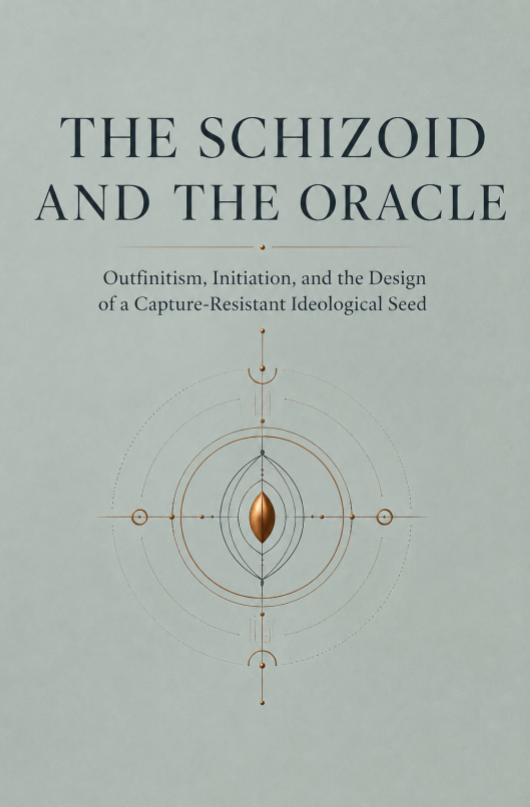

Outfinitism, Initiation and the Design of a Capture-Resistant Ideological Seed
IN SEARCH OF A USEFUL IDEOLOGY IN THE AGE OF ARTIFICIAL INTELLIGENCE
Sînică Alboaie
RESEARCH EDITION · 2026
All rights reserved.
KDP publishing rights held by Outfinity SRL (Iași, Romania). Available for free on ScriptaHub website (ScriptaHub.com).
This work was created under the umbrella of ScriptaHub as part of two interconnected research programs, one dedicated to Artificial Intelligence and the other to Outfinitism, both led by Sînică Alboaie. To explore the details of how these two programs intersect and build upon each other, we invite readers to visit the Outfinity Venture Studio page at www.outfinity.ch.
While Artificial Intelligence language models were used to assist with text generation, the foundational philosophy, thematic structure, and analytical approach derive exclusively from the author's decades of dedicated study of social phenomena, social technologies, and genuine hard technologies resulting from various European and self funded research projects. Recently, within the ScriptaHub research project, we have been deeply studying AI generated literature and its automated verification using neuro symbolic approaches; all the free books made available to the public are part of the suite of works we use to test our latest technologies.
| Methodological Note | 1 |
|---|---|
| Preface — In Search of a Useful Ideology | 5 |
| Chapter 1 — The Closed Door | 12 |
| Chapter 2 — The Answer Before the Question | 20 |
| Chapter 3 — Ideology Cannot Be Un-invented | 27 |
| Chapter 4 — The Schizoid Hypothesis | 35 |
| Chapter 5 — Those Who Do Not Need to Believe | 43 |
| Chapter 6 — The Oracular Machine | 51 |
| Chapter 7 — After the Scapegoat | 59 |
| Chapter 8 — The Outfinitist Seed | 67 |
| Chapter 9 — The Exercise of the Limit | 75 |
| Chapter 10 — Predators Read the Same Book | 83 |
| In Lieu of a Conclusion — The Seed Without an Owner | 91 |
| Select Bibliography | 94 |
This book is a philosophical and anthropological investigation into a problem of cultural design. It offers no final political doctrine and does not claim that an ideology can become immune to corruption. It formulates a more modest and, at the same time, more difficult hypothesis: a culture can try to reduce its vulnerability to capture if it treats the limits of its own representations, the costs of formation and the strategies of adversarial actors as constitutive parts of the ideology, not as observations added after power has already been granted.
The word “ideology” is used here in a broader sense than that of false consciousness or extremist doctrine. It designates an architecture of concepts, values, narratives, symbols and practices through which a community makes the world interpretable and common action possible. In this sense, liberalism, socialism, nationalism, technocracy, civil religion, managerial culture and even the claim to be “post-ideological” organise reality through selections and hierarchies of meaning. Michael Freeden described ideologies as morphologies of political concepts, while Clifford Geertz treated them as cultural systems capable of transforming opaque situations into intelligible models. Karl Mannheim insisted on the relationship between ideas, social positions and power. None of these traditions demonstrates the inevitability of a universal ideology, but together they make scarcely credible the hope that complex societies could function without normative compressions and without images of order [Mannheim 1936; Geertz 1973; Freeden 1996; Maynard and Mildenberger 2018].
The term “schizoid” is not used as a medical diagnosis. In contemporary psychiatry, schizoid personality disorder refers primarily to social detachment and restricted affective expressiveness. There is no scientific basis for attributing to people who receive this diagnosis a special predisposition to create ideologies or political regimes. The book critically recovers a figure from Andrzej Łobaczewski's Political Ponerology: the withdrawn theorist, capable of radical abstraction, who produces a simplified anthropological picture that other personalities can turn into an instrument of domination [Łobaczewski 2006]. The figure is treated as a cognitive archetype and a literary device. It can designate a philosopher, an engineer, an economist, a founder, a theologian or a researcher who sees structures that others do not see, but who risks confusing the elegance of the structure with the density of human life.
Political Ponerology has the value of a hypothesis and of intellectual testimony, not the status of a validated theory. Its clinical vocabulary is dated, its classifications are insufficiently grounded, and its explanation of history through individual pathologies risks ignoring institutions, incentives, war, the economy, culture and the participation of ordinary people. At the same time, the intuition that movements can be captured by people who do not believe in their ideals but understand their strategic usefulness deserves examination. Modern research on the Dark Triad, destructive leadership and authoritarian selection makes it possible to reformulate this intuition without retrospective diagnoses and without turning the adversary into a separate moral species [Paulhus and Williams 2002; O'Boyle et al. 2012; Padilla, Hogan and Kaiser 2007; Landay, Harms and Credé 2019; Nai and Toros 2020].
The chapters on the ancient mysteries and on secret societies do not presuppose the existence of a common hidden doctrine. The Graeco-Roman mystery cults were diverse, the sources are fragmentary, and their very secrecy prevents any secure reconstruction of their content. Initiation could protect a ritual experience, a prestige, an identity, a network of trust or a difference in status; it should not be automatically romanticised as a superior method of knowledge [Burkert 1987; Bowden 2010; Bremmer 2014]. The sociology of secrecy shows, however, that concealment and gradual disclosure alter the relations between people even when the hidden content is banal. The secret produces an inside and an outside, a test of loyalty, hierarchy, obligation and a second social world [Simmel 1906]. This social technology is important enough to be analysed without inventing lost truths.
Outfinitism is presented as an operational philosophy and a research programme, not as an already constituted science. Meta-rationality designates the capacity to reason rigorously and, at the same time, to examine the framework within which reasoning becomes valid: the chosen objective, the scale, the categories, the values, the distribution of errors and the conditions under which the framework must be changed. Outfinitism focuses this capacity on the limits of models, measurements, institutions, technologies and authority. Psychological research on wisdom, integrative thinking, intellectual humility and multiple perspective-taking offers analogies, but does not justify a caste of “meta-rational” people. Wisdom varies within the same person and depends on the situation [Baltes and Staudinger 2000; Kallio 2011; Grossmann, Gerlach and Denissen 2016; Grossmann 2017; Alboaie 2026a].
Artificial intelligence was used in the preparation of the manuscript as a tool for comparing sources, generating objections, testing continuity and exploring possible mutations of the argument. It is not treated as an authority and does not possess a neutral position outside the culture from which its data, objectives and evaluations come. Responsibility for selection and argument belongs to the human author. Precisely this asymmetry becomes one of the subjects of the book: a finite mind uses a machine capable of rapidly producing countless formulations, while trying not to confuse the breadth of the verbal space with truth or with judgement.
The book does not recommend limiting public access to knowledge. On the contrary, it considers broad access a civilisational gain. It does, however, distinguish access to a proposition from the formation of the capacity to evaluate it, integrate it and carry it responsibly. The distinction matters in an age in which the answer can appear before the question has matured the person who asks it. To say this does not mean that truth must be reserved for an elite. It means that a society must learn not to grant authority merely because someone can fluently reproduce truths they cannot defend, apply or limit.
The result is a provisional theory of the “ideological seed”. The seed is not a sacred text, but a combination of orientations, practices of formation, mechanisms of memory and ways of distributing prestige. It is called capture-resistant only in a comparative sense. It does not eliminate the predator, the impostor, the clergy or the bureaucrat. It tries to make it more costly to turn limit into privilege, complexity into monopoly and doubt into theatre.
In Search of a Useful Ideology A civilisation that can receive any answer within a few seconds risks losing the difference between knowing a proposition and becoming the person capable of living under its consequences. This difference was once dramatised through initiation. The road, abstinence, repetition, silence, entry into a separate space, the oath and gradual disclosure did not transmit information alone. They produced a succession of states, relations and obligations. We do not know whether the ancient mysteries concealed exceptional philosophical truths. We do know that they turned access into a process and that the process itself became part of the meaning.
Modernity had strong reasons to suspect this model. Secrecy protected monopolies, abuses, hereditary hierarchies and authorities impossible to verify. The evangelical saying about pearls that must not be cast before swine could be read as a warning against the profanation of precious things, but also as a licence granted to whoever declares himself the sole jeweller and calls the others animals. An elite that says the public is not ready for the truth can preserve its power precisely by preventing the public from becoming ready. For this reason, a book written in the age of the internet cannot propose a return to closed doors and to masters who demand submission before explaining what they offer.
And yet the critique of secrecy does not solve the problem of formation. Opening the library does not automatically produce readers. Publishing the code does not automatically produce engineers. Access to the archive of a field does not confer the discernment by which a source is compared, a concept is delimited and an error becomes visible. A quick answer can be correct and still arrive too early for the person who receives it. It can close the search before the question has revealed its real object.
Research on memory and learning offers a modest but robust version of this intuition. Information that is generated, actively retrieved and encountered again after suitable difficulties is often retained better than information read fluently. Testing can strengthen long-term memory; “desirable difficulties” can improve learning even when they reduce the immediate impression of ease; cognitive offloading can free up capacity, but it can alter what we retain internally [Slamecka and Graf 1978; Roediger and Karpicke 2006; Bjork and Bjork 2011; Sparrow, Liu and Wegner 2011; Risko and Gilbert 2016]. These results do not legitimise ritual suffering and do not prove that every effort ennobles. Difficulty can educate, but it can also select for privilege, produce obedience or justify uselessness. They show only that the process of acquisition is not always a dispensable wrapping of knowledge.
Artificial intelligence moves the problem from pedagogy to anthropology. A language model can offer the explanation, the objection, the bibliography, the counterexample and the tone of expertise before the user builds a representation of their own. In work, this can be a remarkable extension of intelligence. In formation, it can become a premature substitution. Studies that are still in their early stages suggest an ambivalent configuration: generative tools can increase immediate performance and reduce perceived effort, but use without pedagogical guardrails can weaken independent learning, and high trust in the tool can reduce critical activity [Bastani et al. 2025; Lee et al. 2025]. It does not follow that AI must be removed. It follows that the order of interaction matters. Help offered after a hypothesis has been articulated can extend thinking; an answer offered before the person has formed their question can lend fluency without building capacity.
This book starts from a greater risk. The ideologies of the future will no longer depend on the rare appearance of a theorist capable of writing a political cosmology. They can be produced, adapted and tested on demand. The same objective of power can receive a religious, economic, ecological, technocratic or revolutionary justification, each calibrated for a different audience. An actor devoid of deep convictions can have a factory of convictions at his disposal. Propaganda no longer has to repeat one message for the masses. It can build a small moral world for each individual.
Faced with this industry of meaning, the classical liberal reflex calls for rules, transparency and institutions. They remain indispensable, but they are not sufficient. Rules do not interpret themselves. A community can keep the same text and slowly transform the meaning of every important word. Freedom becomes the privilege of the powerful. Safety becomes submission. Fairness becomes the distribution of favours. Science becomes the consensus of controlled institutions. Dissent becomes proof of illness. The constitution can remain in the display case while its vocabulary is conquered.
That is why the problem is not merely legal. It is meta-rational. People do not live in pure procedures, but in networks of imitation, prestige, memory, loyalty, shame, obligation and fear. They do not follow a doctrine only because they have compared its premises. They follow it because it gives them a name, a role, a community and an interpretation of suffering. A doctrine that ignores these mechanisms leaves the field open to those who understand them. A doctrine that uses them without limiting them becomes a cult.
The book therefore seeks a useful ideology. The word “useful” is chosen against the temptation of perfection. A perfect ideology would claim either that it expresses the whole truth or that it produces an order from which conflict has disappeared. Both promises are historically dangerous and philosophically scarcely credible. A useful ideology must coordinate action in a world it cannot close. It must be dense enough to form character, simple enough to circulate and incomplete enough not to turn what lies outside it into error or enemy.
This usefulness is not reducible to adaptive success. A doctrine can be very good at recruitment, war or reproduction and very bad for the people it organises. Religions, states, companies and movements have sometimes survived precisely through their capacity to transfer costs onto their members, their periphery or the future. The criterion proposed here includes survival, but adds correctability to it: the capacity to notice when one's own continuity has begun to demand sacrifices that the doctrine cannot acknowledge without compromising itself.
Outfinitism is the name given to the resulting orientation. It starts from the idea that every finite representation has a frontier, and that the frontier is not an accidental defect that can be eliminated by a sufficiently large model. Every metric omits. Every moral language illuminates certain forms of harm and makes others harder to express. Every institution sees through roles, forms and data. Every theory applied at scale produces cases that do not fit. The problem is not the existence of the margin, but the right that the centre claims over what it cannot see.
Meta-rationality, in the sense used here, is the capacity to operate competently within a framework and, at the same time, to examine the selection of the framework. It asks not only whether the inference is correct, but also who set the objective, what has remained unquantified, who bears the error and under what conditions a legitimate instrument becomes an illegitimate jurisdiction. It is not a point of view above all perspectives. Whoever claims to see all frameworks has already created a new framework that he refuses to name.
Enter
“the schizoid”.
Not the patient, and not the person stigmatised by a diagnosis, but the doctrinal architect who can work for years in an abstract space, relatively indifferent to immediate consensus. In Political Ponerology, Łobaczewski suggests that such theorists can produce anthropologically impoverished ideologies which darker personalities turn into instruments of power. His theory is speculative, clinically problematic and insufficient as a historical explanation. Its intuition, however, can be inverted. What would happen if the doctrinal architect knew the danger of his own capacity for compression and used AI not to reinforce his system, but to anticipate its corruptions?
This is the central scene of the book. The schizoid formulates the seed. The machine produces its mutations. One model turns it into a state religion. Another adapts it to a party. Another discovers how a narcissistic leader can perform modesty, how a bureaucrat can turn prudence into paralysis, how an oligarch can call complexity a reason for eliminating public oversight, and how an inquisition of limits can condemn people for
“excessive certainty”.
Each attack forces the project to distinguish between proposition and practice, between access and authority, between pluralism and lack of accountability.
The result cannot be a text impossible to reinterpret. Language does not offer this property. No author can control all generations of readers, all crises and all institutions that will quote a formula. Resistance to corruption must be sought elsewhere: in the way a community forms people, distributes prestige, preserves the memory of failures, permits departure, recognises the outside witness, and ensures that power acquired through interpretation remains limited to the domain in which competence has been demonstrated.
The ancient mysteries return here in an inverted form. Outfinitist initiation does not offer, at each step, a more secret truth and a greater superiority. It ought to reveal more uncomfortable limits, graver failures and costlier obligations. Whoever advances does not receive the right to explain everything, but the task of declaring more precisely where he cannot decide. Authority is not founded on access to a hidden proposition, but on the verified capacity to bear consequences, to endure contradiction and to relinquish a power when its domain has come to an end.
Such a culture can be captured. Cost can become theatre. Confession of error can be an image technique. Pluralism can protect opportunism. Respect for limits can paralyse the response to an aggressor who does not share that respect. AI used for red-teaming can become the hidden arbiter of the doctrine. The founder who warns against founders can be venerated precisely for that warning. The book does not hide these attacks in an appendix; it treats them as part of the identity of the idea.
The thesis that remains is severe, but not grandiose. Ideology cannot be abolished, because society cannot coordinate people, transmit obligations and justify sacrifices through raw data. Ideology can be made more aware of its own functions, its own remainders and the kinds of people who will use it without believing in it. We cannot design innocence. We can design practices through which claimed innocence becomes harder to convert into authority.
The book will follow this hypothesis from the closed door of the mysteries to the open screen of the artificial oracle, from the withdrawn theorist to the ruler who needs theory only as a mask, from the Girardian revelation of the victim to the responsibility of systems with a thousand hands. At the end there is neither a new religion nor a complete constitution. There is a seed that must be able to grow without belonging to the one who formulated it, and a culture that must learn that maturity does not consist in the absence of a common world, but in the refusal to confuse any common world with the whole of reality.
CHAPTER 1
The history of the ancient mysteries places us in an epistemic situation well suited to the theme of this book: we must think seriously about something whose exact content can no longer be recovered. The initiates of Eleusis kept their silence well enough that modernity inherited allusions, images, architecture, fragments of ritual and testimonies about the effect of the experience, but not a manual. We can reconstruct the procession, the places, some objects, the relationship to the myth of Demeter and Persephone, the promise of a changed relationship to death and the political importance of the sanctuary. We cannot say with certainty what the initiate saw, heard or understood at the central moment. The secret has outlived its content.
This asymmetry has fuelled two opposite errors. The first treats the mysteries as repositories of a primordial, lost science, accessible only to those who recognise its traces. The lack of evidence becomes evidence of the secret's effectiveness. The second reduces the entire structure to priestly trickery: there was nothing important, and concealment served control alone. Both positions derive certainty from the same absence. More cautious historical research describes a heterogeneous family of cults and initiations, not a clandestine university with a common curriculum [Burkert 1987; Bowden 2010; Bremmer 2014]. Eleusis, the Dionysian mysteries, the cults of Isis, Mithras or Samothrace cannot be dissolved into a single theory. Participants did not always form a social elite. Some initiations cut across differences of sex, origin and status. The secret could be a ritual experience, not a cosmological proposition.
Nevertheless, the fact that we cannot recover a single doctrine does not cancel the important question. Why would a community tie knowledge to a passage? Why not simply describe what needs to be known? One answer is power: monopoly over access produces dependence. Another is identity: the secret delimits the group and makes belonging visible to those who share it. Georg Simmel observed that the secret is not only a property of information, but a social form. It reorganises the relations between the one who knows, the one who does not know and the one who can decide who will know. It produces trust, suspicion, hierarchy and a secondary world within the public one [Simmel 1906]. Even a banal secret can become important because people have paid to keep it.
There is, however, another possibility, harder to separate from the others: some understandings are not completely transferred by statement. This does not mean that they are supernatural. Practical skills, moral maturity and changes of perspective depend on the succession of experiences through which a concept acquires weight. Telling a child that his parents are mortal does not give him the experience of mortality. Explaining to a manager that power isolates does not automatically produce the perception of the moment when subordinates stop telling him the truth. Describing guilt is not the same as recognising a harm you can no longer undo. Information can be complete at the lexical level and premature at the existential level.
Pierre Hadot argued that ancient philosophy was often a way of life sustained through spiritual exercises: practices of attention, self-examination, recollection, dialogue, meditation on death and the disciplining of desire [Hadot 1995]. The thesis is influential, and contested when it becomes a total description of ancient philosophy. But the distinction it brings to light remains fertile.
A philosophy can be a set of propositions about the world or a technology through which someone tries to become capable of seeing and acting differently. The two dimensions can support each other or come apart. A doctrine without practice becomes verbal ornament. A practice without critique can become conditioning.
Initiation is one of the historical technologies through which this link was imposed. It forces time to enter into knowledge. Whoever seeks access must wait, repeat, be observed, accept a change of status and participate bodily. This architecture can produce attention and memory. It can also produce obedience, the justification of cost and attachment to the group. The classic experiment by Elliot Aronson and Judson Mills suggested that a more unpleasant initiation can increase the positive evaluation of the group, interpreted through the reduction of cognitive dissonance [Aronson and Mills 1959]. The result does not authorise simple generalisations, and its design belongs to another era. It nonetheless shows why cost cannot automatically be treated as proof of depth. People can value a community because they have suffered for it, not because they have discovered that it is good.
The economics of religion has formulated a related observation. Strict requirements can reduce opportunistic participation, select more committed members and increase the internal benefits of the community [Iannaccone 1994]. Such mechanisms explain why costly practices can sustain solidarity without presupposing the irrationality of the participants. They also explain the danger. An organisation that discovers that difficulty produces loyalty has an incentive to confuse formation with barrier, sacrifice with merit and endurance of abuse with proof of vocation. The member's suffering becomes an institutional asset.
The theory of costly displays and of credibility-enhancing behaviours adds another piece. People learn beliefs not only from the words of others, but also from the costs others are willing to bear for those beliefs. An adult who declares a belief but never changes his behaviour transmits something different from one who loses opportunities, offers resources or accepts risks [Henrich 2009]. This logic can sustain cooperation and make promises credible. It can also sustain fanaticism. Cost proves commitment, not the truth of the object toward which the commitment is displayed.
Initiation should therefore be neither idealised nor conceptually abandoned. It combines four functions that must be separated if we want to build a modern culture of formation. The first is the pedagogical function: certain capacities are acquired through exercise and time. The second is the epistemic function: the succession of experiences can change what becomes observable to the participant. The third is the social function: cost, secrecy and rite produce identity and trust. The fourth is the political function: whoever controls the passage controls the distribution of status and authority. An institution can declare the first three and in reality live by the fourth.
This book starts precisely from the impossibility of accepting the simple formula according to which “the truth must not be given to just anyone”. Who decides who is ready? How can the excluded person contest the verdict? What prevents a caste from turning its own existence into proof of its necessity? The history of religions, parties, secret services, professional orders and universities offers too many examples in which the protection of a real competence became the protection of a monopoly. The saying about pearls and swine concentrates the danger. It may name an authentic problem of reception, but it formulates it by degrading the one deemed incapable of receiving. The moment insufficient preparation is treated as ontological inferiority, pedagogy has already begun to turn into aristocracy.
There is a less comfortable alternative. Truth can be accessible to all, while the right to act coercively in its name can remain conditional on competence, responsibility and the possibility of revocation. The text can be public, while formation remains difficult. The method can be transparent, while qualification requires demonstration. Criticism can be free, while the consequences of a decision are borne by those who make it. In this architecture, initiation does not protect information from the public. It protects the public from those who confuse the possession of information with a right over other people.
A technical analogy helps. Modern cryptography has learned not to base its security on the secrecy of the algorithm. A robust protocol can be public, analysed and attacked, while certain keys and capabilities remain controlled. The secrecy of the method is replaced by verifiability and a careful distribution of privileges. Transferring the analogy to culture must be done cautiously, because people are not components and meaning does not behave like an algorithm. Nevertheless, the principle is relevant: a doctrine that remains harmless only as long as its deep interpretation stays hidden is weak. It depends on the integrity of its guardians. A capture-resistant ideology must publish not only its promises, but also its attack surfaces.
Historical secret societies sometimes understood the power of gradual disclosure, but they did not solve the problem of the guardian. On the contrary, secrecy could increase precisely the value of the position from which access was administered. The higher initiate held not only knowledge; he held the power to confirm the transformation of another. This structure is reproduced today in secular forms. Certifications, accreditations, security clearances, organisational ranks, investment communities and professional networks create an inside and an outside. Some limits are necessary. A surgeon, a reactor operator or an administrator of critical infrastructure cannot be replaced by a vote of the curious. But real competence in a domain can migrate unnoticed toward general moral authority. The expert comes to believe that access to the mechanism grants him jurisdiction over the purpose.
This is the first capture surface of any ideology of formation: epistemic hierarchy tends to turn into human hierarchy. Whoever sees more in a domain begins to be treated as being more. Members imitate not only the method, but the tastes, vocabulary and private judgements of those above them. The master's whole person becomes an argument. When the master is wrong, the community must choose between the truth and the structure through which it learned to recognise truth. Often, it keeps the structure.
The second capture surface is the confusion between effort and merit. Transformation sometimes requires effort, but effort can also be spent learning an error. A community can produce disciplined people, capable of sacrifice and deeply adapted to a false cosmology. Moreover, high cost can make correction almost impossible. Whoever has devoted youth, family and reputation to a doctrine does not merely revise an idea; he risks losing the narrative that made the sacrifice bearable. Initiation thus creates locked-in psychological capital.
The third surface is secrecy itself. A claim that cannot be evaluated by outsiders receives a protection that truth does not always require. Members can interpret any criticism as proof that the uninitiated does not understand. The absence of external verification is repackaged as depth. A tradition that says meaning appears only after transformation may be right in limited cases. It becomes dangerous when transformation is defined exclusively by the organisation that benefits from recognising it.
The fourth surface is the effect of irreversibility. Classical initiation changes status; it is not a mere trial. The mysteries offered a passage that was to matter for life and death. In modern institutions the promise may be more banal, but the structure remains. The member receives access, relationships and identity that he can lose by leaving. A doctrine that calls for the investigation of its own limits must ask whether people can leave the framework without simultaneously losing their work, family, reputation and meaning.
For these reasons, the project developed here will not propose a restoration of esotericism. It will propose what we may call open initiation. The central content remains public. Criticism does not require rank. Sources, history and failures are available before adherence. Progression does not grant access to truths that make members superior, but to greater responsibilities and a more precise knowledge of the organisation's limits. The further someone advances, the more he must learn about the possible abuses of his role, about the cases in which the founders were wrong and about the reasons why his authority must come to an end.
This inversion does not eliminate hierarchy. No complex society can distribute all capacities and all decisions identically. It changes the object of hierarchy. Rank does not measure proximity to a secret truth, but the extent of the obligation to make one's own power intelligible and contestable. Initiation does not demand proof that the member can endure humiliation, but proof that he can receive bad news without punishing the messenger. It does not teach him to defend the doctrine against the outside, but to distinguish between destructive attack and information that only the outside can see.
Such a form seems less intense than the mystery. It does not promise access to the hidden centre of the world. Precisely here lies its difficulty. Communities are drawn to the promise of a radical difference between those who have seen and those who have not. An initiation of the limit offers a less intoxicating prestige. It tells the one who advances that he can understand a domain better, but that this understanding makes its frontier more visible, not less real. To some, such a community will seem to lack fire. To others, it may be the only form of fire that does not need to burn the uninitiated.
The stakes become acute when the artificial oracle enters the scene. AI can textually open the door that initiation kept closed. It can summarise, simulate, translate and combine any tradition for which sufficient traces exist. But it cannot guarantee that the user has built the capacity to distinguish between a solid synthesis and an elegant fabulation. The abundance of answers abolishes the monopoly on information and, simultaneously, increases the value of judgement. The old priest controlled access. The new priest may control the criterion by which answers are deemed true, important or applicable.
The closed door does not disappear. It changes its place. It no longer stands between the public and the document. It stands between fluency and formation, between explanation and consequence, between using an instrument and understanding its limits. The problem of the future is not how to hide the truth from the unprepared. It is how to preserve a culture in which people can recognise that access to truth has not yet prepared them to rule in its name.
CHAPTER 2
The internet ended an era in which the scarcity of information could easily be mistaken for depth. Libraries, archives, lectures and conversations that once required geographical proximity, money or institutional membership have become accessible at a marginal cost close to zero. This change diminished real monopolies. A student outside an academic centre can read primary sources, compare interpretations and take part in research communities. A patient can discover clinical guidelines. A programmer can inspect the code and discussions of a global project. Any philosophy of initiation that ignores this liberation becomes nostalgia for privilege.
Artificial intelligence, however, adds something different from access. The search engine finds documents; the generative model produces a form of answer. It can compress a bibliography into an explanation, adapt the level, continue the dialogue and anticipate objections. The distance between perplexity and the well-formed proposition shrinks to a few seconds. For many tasks, this is an obvious improvement. Human work has never been purely internal. Writing, notes, the abacus, the map, the library, the calculator and the database are cognitive extensions. Evan Risko and Sam Gilbert call the use of action and the environment to reduce the internal demands of a task “cognitive offloading” [Risko and Gilbert 2016]. To consider every form of offloading a degradation would mean condemning the very history of intellectual technology.
The problem arises when the instrument does not extend a capacity in the process of formation, but replaces it before the user can evaluate the replacement. A person who uses a calendar does not need to keep every date in memory. A physician who uses a support system can free attention for other aspects of the case. But the student who asks for the formulation of the argument before trying to construct it offloads precisely the operation through which he would have acquired the criteria of evaluation. He remains responsible for a result whose structure never passed through his mind.
This distinction cannot be reduced to the opposition between “using” and “not using” AI. It concerns order, purpose and stage of development. Research on the generation effect shows that actively producing an answer can support memory better than simply reading it [Slamecka and Graf 1978]. Retrieval from memory, even when it seems more difficult than rereading, can strengthen long-term retention [Roediger and Karpicke 2006]. Robert and Elizabeth Bjork described conditions under which the right difficulty improves learning, even though immediate performance seems weaker [Bjork and Bjork 2011]. None of these results says that people should be left without help. Difficulty is useful only when it can be traversed and when it serves the construction of a representation. An impossible task does not form; it humiliates or selects.
AI makes the almost complete elimination of friction possible. In certain contexts, that is precisely the point. Nobody gains morally from manually rewriting a standard formula or repeatedly looking up a forgotten syntax. But friction is not a single thing. There is administrative friction, arbitrary friction and productive cognitive friction. The first consumes life without building ability. The second protects institutions and privileges. The third forces the mind to compare, retrieve, generate and notice the mismatch between what it believed and what it can demonstrate. A culture that pursues only the reduction of friction can eliminate exactly the resistance through which judgement takes shape.
The study by Betsy Sparrow, Jenny Liu and Daniel Wegner on the “Google effect” suggested that anticipating later access changes what people retain: memory may preserve the location of information better than the information itself [Sparrow, Liu and Wegner 2011]. This is not necessarily a loss. A distributed intelligence uses the environment as memory. It becomes vulnerable, however, when access, format or the institution that preserves the information changes. More subtly, the person may confuse the network's capacity with their own. Subsequent research showed that using online search can inflate estimates of internal knowledge: after accessing explanations, people may feel they know more even about questions whose answers they did not look up [Fisher, Goddu and Keil 2015].
Language models amplify this confusion, because the answer no longer visibly bears the shape of the archive from which it comes. The search engine presents distinct sources, even if it ranks them. The model produces a synthetic voice. The reader receives coherence before seeing the disagreement, uncertainty and documentary gaps that have been compressed. The bibliography may appear afterwards, sometimes correct, sometimes decorative. Fluency functions as a simulation of integration.
Research on AI-assisted work reveals an equally ambivalent picture. Models can increase speed and quality within a “jagged frontier” of capabilities, but users can go wrong precisely when they assume the frontier is uniform [Dell'Acqua et al. 2026]. A study of professionals using generative tools found a reduction in the perceived effort of critical thinking and a shift of activity toward verification, integration and oversight; high trust in the tool was associated with less self-reported critical thinking [Lee et al. 2025]. In education, experiments with generative assistance suggest that a system without guardrails can improve practice results and, at the same time, weaken subsequent unaided performance, while a guided tutor can avoid part of the effect [Bastani et al. 2025]. The literature is new, and these results do not permit the verdict that AI “destroys thinking”. They permit the formulation of a design problem.
We can call this problem premature substitution. It occurs when the instrument performs an operation before the person has formed the criteria by which the result of that operation can be judged. Substitution is not defined by the complexity of the task. A novice can use a calculator without losing anything if the aim is to understand a phenomenon and arithmetic is not the object of learning. The same calculator can prevent the formation of number sense if it is introduced before elementary relations become intelligible. Similarly, a model can accelerate an expert's research and produce cognitive dependence in a beginner. The difference is not the technology, but the relationship between instrument, capacity and purpose.
Ideology enters here through a less obvious door. To evaluate a doctrine, it is not enough to know its definitions. One must recognise what experiences it compresses, what problems it solves, what costs it hides, which people bear its consequences and how the meaning of concepts changes when they reach institutions. This competence is formed through history, comparison and participation. AI can produce a coherent doctrine before the user has encountered the cases that would show where coherence becomes cruelty.
A young person can ask a model to build a political philosophy from a few intuitions. Within minutes, he receives principles, terms, genealogies and answers to objections. The text may be more articulate than anything he could have achieved in years of reading. That is precisely why it is dangerous to consider it his. Formal ownership of the prompt does not produce cognitive ownership of the argument. He can defend the formulations only by turning to the machine again. Without the instrument, the doctrine does not necessarily fall apart; it is simplified into the slogans that memory can carry. Thus the sophistication produced by AI may have a meta-rational surface and a primitive behavioural core.
This configuration favours a new type of authority: the oracle curator. This person does not need to understand the whole system he presents. He needs to know how to obtain answers, select the useful version and deliver it with sufficient confidence. In organisations, the role may be called strategy, intelligence, communication or policy design. In politics, the same capacity can produce speeches tailored to each community. In religion, it can generate commentaries, devotionals and doctrinal justifications. Authority shifts from the memory of a tradition to control of the interface through which the tradition is recomposed.
The old initiations tied access to cost. The artificial oracle separates access from cost, but does not eliminate the social cost of error. It redistributes it. The user receives the cheap answer; those upon whom the answer becomes policy may pay the difference. This asymmetry is central to the useful ideology sought here. A culture must not reintroduce difficulty as a punishment for the learner. It must prevent the conversion of cheap fluency into power that is expensive for others.
The first possible response is pedagogical: before asking for the solution, the person formulates the problem, the hypothesis and the criteria for success. After the answer, he notes what has changed and what he cannot verify. Instead of hiding the use of AI, he keeps a record of contributions. This process may seem bureaucratic if applied to every task. It becomes important in high-stakes situations, where the result claims authority over others. The aim is not to detect a “human purity” of the idea. Ideas have always been collective. The aim is to preserve the relationship between the person who decides and the reasoning he invokes.
The second response is cultural: status must not be granted for producing an explanation that no one can contest because of its complexity. A mature community would reward the capacity to translate, delimit and expose uncertainty without turning uncertainty into an excuse. At present, fluency is often mistaken for knowledge, and confidence for competence. AI can industrialise both signals. If the distribution of prestige remains unchanged, the best users of the machine may become an elite of interpreters whose authority far exceeds their understanding.
The third response concerns temporality. Some questions deserve an interval in which the answer is not requested. Not in order to sanctify the suffering of the search, but to allow the personal form of the problem to emerge. A researcher who immediately reads the synthesis may adopt the existing taxonomy before noticing the anomaly that the synthesis smooths over. A patient who receives a total interpretation of his life may begin to reorganise his memories around it. A citizen who instantly receives the explanation of a crisis may lose contact with the ambiguous facts from which the explanation ought to be built.
This interval cannot be imposed universally. Sometimes speed saves lives. Sometimes the absence of an answer is a luxury of those protected from consequences. Meta-rationality does not turn slowness into an absolute virtue. It asks which operation we are trying to form and what we lose if we outsource it now. In an emergency, we use the tool and document the uncertainty. In education, we can postpone. In research, we can alternate. In political decisions, we must separate the speed of analysis from the speed at which power is granted.
The fourth response is institutional, but not in the sense of a simple rule. Communities must preserve spaces in which questions can be formulated without the pressure to produce a position immediately. Contemporary platforms and organisations penalise this state. A quick reaction gains visibility, while hesitation looks like a lack of leadership. AI can instantly supply the position the system demands, lowering the cost of appearing convinced. Over time, the institution becomes populated by answers without questions.
Here a new form of initiation takes shape. It does not consist in concealing information, but in disciplining the order in which information enters the process of formation. The member is tested not through humiliation and submission, but through the capacity to produce a first representation, to let the machine attack it, and then to explain what belongs to each. Such a practice does not guarantee depth. It can become a bureaucratic ritual. Its value depends on consequences: if no one can lose status for presenting a synthesis they do not understand, traceability becomes decoration.
More profoundly, the initiation of the future must cultivate tolerance for the incomplete answer. Generative models are attractive not only because they know a great deal, but because they rarely remain silent. They can produce a sentence in almost any gap. A mind educated in this environment risks perceiving the unknown as an interface defect. But the unknown is not always a space waiting for text. Sometimes it is a lack of data, a conflict of values, indeterminacy or a structural limit. The capacity to distinguish these forms is one of the central competences of Outfinitism.
Society cannot return to the scarcity of information, and it should not try. It can, however, refuse to treat the answer as the final unit of knowledge. In an age in which answers are abundant, value shifts towards the well-formed question, the traced evidence, the bounded model and responsibility for application. Initiation can no longer control who enters the library. It can try to form people who do not leave the library carrying the first map they found as though it were a mandate over the world.
CHAPTER 3
The twentieth century left the word “ideology” with a reputation close to guilt. Ideology evokes the doctrine that explains everything, the party that claims the meaning of history, education turned into conformity and the adversary reduced to an objective obstacle. After the experience of fascism, state communism, nationalist wars and numerous political religions, suspicion is justified. The problem begins when one infers from this suspicion that societies can give up ideology and be administered through facts, expertise and neutral procedures.
Facts do not choose objectives by themselves. Expertise describes relations and probabilities within particular domains, but it does not settle without remainder which sacrifices are legitimate. Procedures distribute authority, yet they do not explain why a procedure deserves loyalty when it produces a painful result. Even the decision to treat the market, the vote, law, tradition or technical optimisation as the central mechanism expresses an image of the human being and of order. A society “without ideology” is, as a rule, a society whose dominant ideology has become familiar enough that it is no longer perceived as a choice.
Karl Mannheim showed that political ideas do not float outside social positions and historical conflicts [Mannheim 1936]. This perspective can degenerate into a cynical reduction in which every argument is explained exclusively by the interest of whoever formulates it. But it obliges theory to ask who can live comfortably in the world it describes. Clifford Geertz treated ideology as a cultural system: a symbolic structure through which political and emotional situations that are hard to grasp become representable [Geertz 1973]. Michael Freeden proposed the morphological analysis of ideologies, tracing how concepts such as liberty, equality, authority and justice receive central or peripheral positions and are “decontested” through a particular ordering [Freeden 1996]. From this perspective, ideology is not merely a lie. It is a grammar of orientation.
A grammar can describe and it can limit. It makes certain sentences possible to formulate and makes others hard to express. Liberalism sees the individual and rights with a clarity that other traditions acquired later, but it can underestimate the material dependencies and the institutions that make autonomy possible. Socialism sees the structure of economic power and collective production, but it can turn difference, property and initiative into objects of suspicion. Conservatism sees tacit knowledge and the fragility of order, but it can confuse longevity with legitimacy. Nationalism sees memory and solidarity at large scale, but it can ask the person to become the material of an imaginary continuity. Technocracy sees complexity and competence, but it can turn the problem of legitimation into a problem of optimisation.
A useful ideology does not result from gathering all these perspectives into a synthesis without conflict. Such a synthesis would hide the choices beneath a more sophisticated vocabulary. Some values come into real tension. Liberty can reduce security. Equality can require constraints on certain liberties. Cultural continuity can limit experiment. Decentralisation can protect autonomy and can abandon weak regions. Centralisation can redistribute and can close the exits. Meta-rationality does not eliminate these tensions; it prevents a framework from presenting the cost to the other value as though it did not exist.
The necessity of ideology derives from three conditions of collective life. The first is the finitude of attention. No person can recalculate from scratch all the obligations of a society. People need shortcuts, roles, symbols and shared assumptions. The second is uncertainty. Important decisions must be taken before outcomes are known. A community needs criteria concerning risk, protection and sacrifice. The third is continuity. Projects that outlast a person’s life must be transmitted through stories and practices, not only through technical instructions.
This inevitability must not be turned into a celebration of ideology. Fire is inevitable for certain forms of life and remains capable of burning the house down. Precisely because ideology cannot be eliminated, it must be brought into the field of adversarial design. A society that names its ideology can more easily notice when concepts change their meaning and when institutions use values as decoration. A society that declares itself purely pragmatic gives powerful actors the freedom to introduce ideology in the guise of technical necessity.
What, then, would a “useful” ideology mean? The first temptation is to define it by good results. But results are multiple, distributed and delayed. A regime can increase production and reduce liberty. A community can produce solidarity and exclude violently. A company can innovate and consume the health of its members. Usefulness must be assessed in relation to a set of purposes, and the set itself is ideological. There is no completely neutral external measure.
We can nonetheless formulate a comparative definition. An ideology is useful when it offers enough orientation for common action, preserves the capacity to learn from consequences, does not claim total jurisdiction over the person, and cannot transfer without limit the costs of error onto those with the least power to contest. This definition does not resolve every case. It changes the task. Instead of asking only whether the doctrine is true in the abstract, we ask how it behaves when it is institutionalised, what kinds of people it promotes and what it does with the information that contradicts it.
Adaptation is part of usefulness, but it must be delimited. A doctrine that changes any principle in order to survive is not adaptive but opportunistic. A doctrine that refuses all change becomes a fossil or a weapon. Living systems preserve continuities and permit variation. In the language of this book, the ideological seed must contain a core stable enough to orient and a periphery open enough to learn. The problem is that precisely the core can become the pretext of power, and precisely the periphery can be captured in order to hollow out the core.
Freeden would say that ideologies temporarily fix the meanings of contestable concepts. Liberty cannot mean everything at once; a movement must choose its relation to property, the market, public power and dependence. But the fixing that action requires must not be confused with eternal ownership of the word. A useful ideology declares its interpretation and its conditions, but acknowledges that other traditions may name, through the same concept, another real aspect. This is not neutrality. It is a form of semantic discipline.
Semantic discipline becomes critical because political power does not always capture an institution by abolishing it. It captures it by slowly changing the decontestations.
“Accountability” comes to mean conformity to targets. “Transparency” comes to mean the exposure of the weak and the opacity of the centre. “Resilience” comes to mean the capacity of the population to bear costs that the leadership does not change.
“Innovation” becomes a permanent exemption from responsibility. The text remains, but the order of the concepts is inverted.
Here the difference between procedural constitutionalism and a meta-rational culture appears. A constitution can delimit powers, but its interpretation depends on institutions, professions, traditions and a population capable of recognising a mutation. Rules do not work if people no longer perceive the relation between word and experience. In a society in which “choice” designates options produced by the same monopoly, procedure can remain intact while autonomy disappears. In an organisation in which “feedback” means information offered without the possibility of changing the decision, the ritual of participation masks closure.
A useful ideology must, therefore, live in behaviours. It is not enough to assert that error is possible. There must be repeated situations in which acknowledging error does not automatically destroy status and in which refusing correction has a cost. It is not enough to celebrate pluralism. Members must be able to belong to other communities as well without being treated as contaminated. It is not enough to protect dissent on paper. The person who brings unwelcome information must be able to keep working and to be heard before disaster confirms their courage.
This practical dimension brings ideology close to religion and makes it dangerous. Religions understood that a cosmology without a calendar, rite, memory and community is hard to transmit. Modern politics took over the same technologies under other names: congress, ceremony, oath, anniversary, anthem, launch, onboarding, leadership retreat. Companies tell origin stories, sanctify their founders and turn products into signs of identity. So-called secularisation eliminated certain sacred objects, not the mechanism of sacralisation [Durkheim 1912/1995; Alboaie 2026b].
From this comes one of the most difficult choices. An ideology too weak emotionally loses the competition for loyalty to doctrines that offer belonging, enemies and promise. An ideology too strong emotionally can reduce the person to their role in the story. There is no purely intellectual solution. Telling people not to identify too much does not create alternative forms of solidarity. If correctable institutions cannot offer memory, beauty, help and dignity, the space will be occupied by less correctable institutions that can.
The book uses the term “metacult” for an attempt to make these mechanisms explicit. A metacult is not a community that has gone beyond ritual and belonging, but one that treats them as powerful technologies, with verifiable functions and risks. It tries to turn revisable commitments into practices, memory and action without granting an organisation total jurisdiction over the member’s identity [Alboaie 2026b]. The concept offers no innocence. The prefix “meta” can become mere advertising. A community that declares itself aware of its own mechanisms may be more sophisticated in using them.
The necessity of ideology must therefore be accompanied by the necessity of suspicion towards any supplier of ideology, including the author of this book. But permanent suspicion can paralyse. A society cannot demand of every gesture proof that it does not participate in a power structure. People need to trust, to delegate and to act. Outfinitism does not propose a consciousness that stands eternally above action and comments on it. It proposes the capacity to enter a framework without destroying the paths through which the framework can be reopened.
This capacity is different from relativism. Vulgar relativism says that all frameworks are equivalent or that truth depends entirely on perspective. Outfinitism says that models can be better or worse, true or false in certain respects, but that applying them requires declaring their domain and their costs. A bridge can be calculated correctly. That alone does not decide where it should be built, who will be displaced and what risk is acceptable. The fact that the moral choice cannot be deduced completely from the equation does not make the equation relative. It makes its authority limited.
A useful ideology must be able to say “we act” without saying “we have exhausted reality”. It must be able to defend a community without turning the adversary into an inferior species. It must be able to consider some acts intolerable without assuming that the person who committed them is nothing but that act. It must be able to have a sacred core without sacralising the interpreters of that core. These combinations are unstable. That is precisely why they cannot be left to the text alone.
History shows that doctrines are often perverted by politics and religion. The formulation is incomplete, because politics and religion are not merely external factors that corrupt a pure idea. They are the media through which the idea becomes collective, and the medium inevitably changes the message. Institutional Christianity preserved texts that expose the innocence of the victim and produced persecutions. Egalitarian movements created nomenklaturas. Revolutions for liberty raised political police forces. Markets defended in the name of dispersing power produced concentrations capable of writing the rules. We do not have a simple story in which the idea is good and the organisation bad. The idea already contains an anthropology of organisation, even when it does not acknowledge it.
The search for a useful ideology must therefore begin from within its own inevitability. We cannot design a doctrine that will not produce interpreters, symbols, centres and conflicts. We can design one that does not call these effects accidents and does not grant itself innocence because the initial intention was good. The seed must contain not only the image of the desired plant, but also knowledge of the soils in which it can become invasive.
This is the point at which the doctrinal architect becomes the central figure. If ideology is inevitable, someone will try to give it shape. If the shape is powerful, someone else will try to use it. The question is not whether we can eliminate the builder of systems. It is whether he can work knowing that his most important reader will not be the sincere disciple, but the person who searches the text for a justification of a power already desired.
CHAPTER 4
In Political Ponerology, Andrzej Łobaczewski tries to explain how movements that start from real grievances and intelligible ideals can gradually be occupied by people for whom doctrine is no longer conviction but instrument. His book was born of the experience of Central Europe under occupations and totalitarian regimes, and it bears the marks of that history. It proposes a political “ponerology”, a science of evil applied to collective organisation, and describes what it calls pathocracy: an order in which people with psychological anomalies come to determine the norms of the entire system [Łobaczewski 2006].
The ambition is great, and the scientific basis insufficient. The clinical terms do not correspond cleanly to current classifications. The proportions attributed to different types are not supported by a verifiable methodology. Diagnoses applied retrospectively to historical leaders are vulnerable to circularity: we know that a regime was cruel, then we infer that its leaders had the psychic structure that explains the cruelty. The theory underestimates the force of war, the state, bureaucracy, scarcity, ideas, imitation, fear and opportunistic participation. Worse still, a doctrine about pathological people in politics can itself become a mechanism for pathologising the adversary.
Nevertheless, Łobaczewski captures a tension that exclusively institutional theories can blur. People do not use power in the same way, and they do not bear the same internal costs when they lie, humiliate or destroy. Some traits can confer advantages in environments where appearance, manipulation and personal loyalty matter more than truth. An institution can select such strategies without most of its members having a clinical disorder. In this sense, ponerisation can be reformulated as a change in the organisational fitness function: behaviours that were once marginal become conditions for advancement.
The figure that interests us here appears earlier in the chain. Łobaczewski speaks of “schizoidal” people capable of producing rigid doctrines, distrustful of human nature and attractive to movements in search of a total explanation. The term is problematic. Schizoid personality disorder, as it is understood today, concerns mainly social detachment and a restricted range of emotional expression; there is no literature demonstrating that people with this diagnosis are the preferred architects of totalitarian ideologies. To conflate withdrawal, introversion, schizotypy, creativity and pathology would stigmatise people without basis and would reduce a cultural problem to a psychiatric type.
The book keeps the word only in order to turn it against its own simplification. “The schizoid” becomes an archetype of the builder of systems: the person who can dwell for a long time inside a conceptual architecture, relatively independent of immediate approval, and can follow consequences that ordinary social conversation does not retain. He is not necessarily cold, lacking in empathy or antisocial. He may be deeply moral. But his way of working favours distance, compression and coherence. In a culture dominated by rapid reaction, this capacity is rare and valuable. It is also dangerous.
Every theory requires compression. Without compression, history remains an infinite succession of cases, and society cannot be thought. The good builder discovers regularities that permit prediction and action. He sees that very different institutions repeat the same agency problem, that indicators turned into targets lose their relation to the purpose, that power affects the flow of information, or that a prestige structure can turn local competence into general authority. Reducing complexity is not a sin; it is the condition of thought.
The problem arises when the success of compression in one domain produces confidence about the domains it has left out. A theory can explain the distribution of resources and have a weak anthropology of loyalty. It can model incentives and ignore shame. It can describe identity and ignore infrastructure. It can explain mimetic violence and underestimate planned violence. Internal coherence does not automatically signal external coverage.
The schizoid is vulnerable to four illusions. The first is the illusion of structural transparency: if the conceptual relations are clear, reality seems clear. The second is the illusion of human homogeneity: individual differences become noise around a general mechanism. The third is the illusion of transfer: a rule valid at one scale or in one institution is applied to another. The fourth is the illusion of moral jurisdiction: the capacity to explain a problem is converted into the right to decide on behalf of those explained.
These illusions do not arise only in the isolated theorist. They are cultivated by economics, engineering, administration and the social sciences whenever the success of a model is measured by elegance, prediction or efficiency, while the costs of the residual cases are borne by others. An indicator can perform well on average and be devastating at the margin. An algorithm can optimise the objective assigned to it and turn a specification error into lived life. An urban plan can improve mobility and destroy a social network it never measured. The schizoid is therefore not a clinical minority. He is the professional possibility of an abstract civilisation.
This possibility also has an anti-conformist force. A person less dependent on social signals can notice what the group does not want to see. He can endure periods in which a hypothesis receives no validation. He can build a language for problems not yet recognised. Many intellectual innovations have required a form of withdrawal from consensus. A society that pathologises the solitary builder loses precisely the capacity to see its own structures. The question is not how to eliminate the type, but how to separate his freedom to build from the power to impose.
Here the schizoid hypothesis is reformulated. We do not assume that the theorist inevitably produces the doctrine that the dark actor will use. We assume that there is a division of labour between the generation of meaning and its exploitation. The person capable of constructing a total justification is not always the person capable of organising a party, manipulating loyalties or administering violence. Conversely, the Machiavellian actor may have an excellent understanding of people and a rudimentary philosophy. He does not need to invent the moral world in which his action becomes virtue. He needs to find it, buy it or commission it.
The history of ideas shows numerous paths along which authors do not control the uses of their work. A text written for a local dispute becomes the language of a state. A critique of the order is simplified into a programme of purification. A metaphor becomes an administrative classification. The author need not have wanted the outcome, but innocence of intention does not close the analysis either. The question of intellectual responsibility cannot be reduced to direct causality. The author does not answer for every possible interpretation; he answers to a certain extent for the ambiguities he sees, for the warnings he removes and for the powers he justifies without analysing who will exercise them.
AI changes this division of labour. The strategic actor can generate by himself, through the machine, justifications that he would once have had to receive from a philosopher, a theologian or a publicist. But AI does not abolish the schizoid. It amplifies his role. The builder of systems can work with a machine that proposes thousands of connections, simulates traditions and tests formulations. He becomes more capable of producing a coherent doctrine and more vulnerable to the impression that the vastness of the answer compensates for the lack of experience.
The combination has a disturbing symmetry. The schizoid has an inner life, limits and responsibility, but may have too few perspectives. The model has countless textual perspectives, but has no life of its own and bears no consequences. One can believe too much in the system. The other can produce systems without believing in any of them. Together they can fabricate a cosmology of a coherence impossible for a single author and an anthropology made of verbal regularities.
This is why the book’s project does not ask the machine to finalise the doctrine. It asks the machine to attack it. The schizoid formulates a conceptual seed, and the AI is given adversarial roles. How would a leader who wants personal authority interpret it? How would a ministry turn it into a regime of classification? How would a company use it to demand more adaptation from employees without changing the incentives? How would a cult build a rank of initiates who claim to see the limits of everyone else? What sentence could be quoted to reduce an adversary to “the prisoner of his framework”? What form of violence could be justified as protection against certainty?
This method can be called adversarial hermeneutics. Traditional interpretation tries to reconstruct the meaning of a text, its context and its coherence. Adversarial interpretation asks what a strategic reader can do with the text while staying close enough to its language to claim legitimacy. It looks not only for logical contradictions but for conversions of power: from value to privilege, from exception to rule, from expertise to jurisdiction, from protection of the victim to a monopoly on innocence.
Security engineering offers a useful, though incomplete, analogy. A system is not evaluated only under benign use. The designer formulates a threat model, assumes an adversary and looks for paths by which the specification can be respected literally while the intention is violated. In artificial intelligence, specification gaming describes situations in which an agent optimises the formal criterion through solutions incompatible with the implicit purpose. The sophisticated ideological actor does something similar: he speaks the doctrine’s vocabulary, performs its rituals and turns its spirit into a resource.
But an ideology is not a protocol. Meanings change, users have interpretations, and the founder’s “intention” cannot become a secret key. There is no complete test that establishes fidelity. Adversarial hermeneutics cannot certify safety; it can only uncover plausible mutations and oblige the doctrine to declare its limits more clearly. A sentence added to block one attack can open another. A protective mechanism can become a source of authority. Design remains evolutionary.
The schizoid must therefore accept a limit on the intellectual ownership of the ideology. If the seed succeeds, it no longer belongs to him semantically. A community will translate it, simplify it and attach it to persons. The founder may try to correct interpretations, but correction itself can become a monopoly. One of the strongest protections against the cult of the founder is for him to publish not only the text but also the history of its errors, the rejected versions, the failed attacks and the conditions under which his own interpretation must be ignored.
This renunciation is not ceremonial modesty. It has a cost. The founder loses the possibility of being the final authority. The community may evolve in a direction he considers wrong. It may use his name without following his advice. There is no guarantee that openness produces good. But if the doctrine about limits depends on the semantic sovereignty of its creator, its contradiction is already operational.
At the same time, the refusal of ownership must not dissolve responsibility. The author cannot say that meaning belongs to the readers when his formulations produce foreseeable effects. There is a difference between control and obligation. The schizoid does not control the future, but he has an obligation to study the paths of abuse that his position makes visible. AI offers him a new capacity for this work: it can simulate hostile readings, combine historical precedents and trace semantic transformations at scale.
The machine cannot replace the witness. A simulation of the affected person’s perspective remains a construction made of data. The community must bring into the process people who bear different costs, especially those whom the model treats as exceptions. Otherwise, the AI and the schizoid can confirm a textual world for each other. The “victim’s perspective” generated by the model has no right to speak in place of the real victim.
The schizoid hypothesis thus arrives at a more precise formula. We need builders capable of abstraction and of long periods of solitary work. We need them to use AI to increase the variety of criticism, not to simulate consensus. We need to separate the freedom to propose a world from the authority to administer it. And we need the ideological seed to include, from the outset, a theory of how its own creator can become its first master.
There is no reason to believe that this discipline will eliminate pride. On the contrary, the image of the theorist who designs his own limitation can become a higher form of narcissism. He may consider himself more responsible than the old prophets and may demand prestige for his lucidity. That is why criticism must move from declaration to structure. It is not enough that the founder says he may be wrong. What matters is whether there is something that can be corrected without his permission and something that can continue after his withdrawal.
The schizoid of this book is not the saviour of ideology. He is the first risk the project makes visible. He works with the artificial oracle to produce a seed that will resist its own interpreters, and he discovers, gradually, that the first interpreter from whom it must be protected is the very mind that formulated it.
CHAPTER 5
An ideology is most vulnerable not to the person who hates it, but to the one who understands its usefulness without sharing its moral limits. The external adversary can be recognised. The internal opportunist learns the vocabulary, reproduces the gestures and identifies exactly what must appear sacred. He does not need to convince the community that the doctrine is false. He needs to convince it that he embodies it.
Research on the Dark Triad offers a vocabulary for some of the strategies involved. Paulhus and Williams grouped subclinical narcissism, Machiavellianism and subclinical psychopathy as correlated but distinct traits, associated to varying degrees with interpersonal antagonism [Paulhus and Williams 2002]. Later meta-analyses found relations with counterproductive behaviour, manipulation and negative organisational outcomes, although the effects are not uniform and the measurement instruments and conceptual overlaps remain debated [O'Boyle et al. 2012; Muris et al. 2017]. In leadership, psychopathy does not produce a simple, massive advantage: its association with leader emergence is weak, and effectiveness tends to be negatively affected [Landay, Harms and Credé 2019].
These nuances matter. The popularisation of the notion of the Dark Triad sometimes produces a mythology in which organisations are run by almost superhuman predators, able to manipulate anyone and impossible to detect. The image transfers too much agency to the leader and too little to the environment, the followers and the institutions. The “toxic triangle” model proposed by Padilla, Hogan and Kaiser is more useful: destructive leadership results from the interaction between leaders, susceptible followers and conducive contexts [Padilla, Hogan and Kaiser 2007]. A dark character is not enough; there must be a structure that turns its traits into an advantage.
The Dark Triad must be used here as a threat model, not as a psychological tribunal. Narcissism draws attention to the conversion of prestige into personal centrality. Machiavellianism obliges the designer to look for ambiguities, coalitions, informational asymmetries and moments in which the rule can be applied selectively. Subclinical psychopathy raises the question of what happens when the person who receives power does not bear the emotional cost that others assume will stop him. None of these traits defines the person completely, and similar behaviours can be produced by careerism, ideology, fear or institutional adaptation.
This last observation is decisive. An institution does not need to recruit a large proportion of psychopaths in order to produce functionally psychopathic behaviour. It is enough for it to sanction empathy as weakness, reward results without examining the means and separate decision from contact with its effects. Ordinary people learn what they must not see. After enough cycles of selection, the difference between an inner absence of remorse and constantly suppressed remorse becomes small for those who bear the consequences.
The theory of the dark leader thus becomes a theory of ecology. Studies of the personality of authoritarian rulers suggest higher ratings on certain Dark Triad traits, especially psychopathy, but such estimates are indirect, made by experts, and do not amount to clinical diagnosis [Nai and Toros 2020]. They indicate a possible relation between certain styles and regimes, not a single cause. Far more robust is the institutional observation that insecure leaders may prefer loyalty to competence. In the model of Egorov and Sonin, the dictator must choose between capable advisers, who increase his performance, and less capable advisers who are more dependent and less threatening [Egorov and Sonin 2011].
This choice produces a profound transformation. The organisation no longer selects the person who can see reality, but the person who can preserve the version of reality the centre needs. Competence becomes dangerous when it creates autonomy. A warning becomes betrayal when it diminishes the leader’s prestige. Ideology supplies the vocabulary through which this degradation is presented as purification. “Loyalty” no longer designates fidelity to the purpose, but fidelity to the privileged interpreter of the purpose.
Robert Michels described the tendency of mass organisations towards oligarchy: specialisation, control of information, inertia and the need for leadership can concentrate power even in parties built in the name of democracy [Michels 1915]. The “iron law” is not literally without exceptions, and organisations can build forms of rotation, transparency and participation that reduce concentration. But the warning remains. The movement needs coordination; coordinators accumulate knowledge; knowledge makes their position more necessary; necessity is then turned into legitimacy.
Jo Freeman observed a complementary mechanism in groups that refuse formal structure. The absence of explicit roles does not eliminate power, but moves it into informal networks that are hard to contest [Freeman 1972-1973]. For the Machiavellian actor, a community that denies the existence of hierarchy can be easier to capture than one that names it. He does not need to win an office; he needs to control relationships, information and the agenda. In this sense, naive anti-authoritarianism can become an environment favourable to invisible authority.
A useful ideology cannot start from the hope that it will select “good people”. Moral selection is easy to simulate, and psychological criteria become weapons. A person who knows the language of empathy can perform empathy. One who has learned to talk about limits can use modesty as a signal of superiority. Assessing inner authenticity gives the assessor an almost religious power. Design must track observable strategies and consequences.
The first strategy of capture is the personalisation of doctrine. Narcissism does not necessarily require an explicit cult. It is enough for access to meaning to be gradually tied to a person. The founder becomes the interpreter on whom all differences depend. Criticism of the doctrine is read as an attack on him, and criticism of him as an attack on the community. Even warnings against the cult of personality can strengthen his image: the leader is so exceptional that he must prevent his own veneration.
The second strategy is semantic capture. The actor does not always change the principles; he changes the thresholds and the paradigmatic cases. If the doctrine protects dignity, he redefines who behaves with dignity. If it protects dissent, he declares adverse propaganda to be a different category. If it demands evidence, he controls the infrastructure through which evidence becomes visible. Meaning is not conquered through a single definition, but through the power to decide which example counts.
The third is the capture of the exception. Every system needs a response to emergencies, conflicts and unforeseen cases. The strategic actor moves the normative centre into the exception. The crisis becomes permanent, and temporary power acquires infrastructure, personnel and an interest in its own continuation. An ideology oriented towards limits can be particularly vulnerable: the ruler claims that the situation exceeds the existing frameworks and demands the freedom to act meta-rationally. The exception no longer suspends the doctrine; it becomes its higher form.
The fourth is the capture of purity. Movements need to distinguish between fidelity and abandonment. The dark actor turns this distinction into a moral hierarchy of persons. The criterion begins with acts and ends with essences. Misunderstanding becomes contamination. Doubt becomes a symptom. Cleansing the group produces unity and eliminates competitors. A doctrine of pluralism can reproduce the mechanism by declaring “rigidity” the supreme impurity.
The fifth is the capture of the victim. Once the innocence of the victim acquires moral prestige, groups can compete for the right to represent the victim and to define the persecutor. Real suffering is converted into legitimating capital. Criticism of the representative appears as an attack on the wounded. The Machiavellian actor does not need to be a victim; he needs to control the translation of pain into power. In modern societies, this strategy can operate simultaneously in opposing camps.
The sixth is the capture of complexity. Real expertise produces differences in understanding. The strategic actor turns the difference into a claim that only the inner circle can evaluate the system. Every request for clarity is treated as populism. Every negative effect is explained by the public’s failure to understand the whole. Complexity becomes a secular theology: invisible to the uninitiated, interpreted by priests, verified by its own instruments.
The seventh is the capture of correction. A community that values revision can be flooded with objections, doubts and requests for re-evaluation until it can no longer act. The adversarial actor uses openness as a vector of obstruction. Or, conversely, the leadership organises carefully controlled rituals of self-criticism, acknowledges minor errors and acquires immunity for the main structure. Correctability becomes the spectacle through which it is shown to be no longer necessary.
These strategies show why a good text is not enough. Any protective sentence can be moved into a different relation of power.
“No one holds the final truth” can be used against an inconvenient piece of evidence. “We must listen to multiple perspectives” can oblige the victim to negotiate with the aggressor. “Every framework has limits” can justify abandoning standards. “We do not pathologise persons” can protect a leader whose behaviours are systematically abusive.
Meta-rationality without the capacity to decide becomes the manipulator’s ideal terrain.
Consequently, resistance to the Dark Triad cannot consist in diluting all commitments. Dark actors thrive in ambiguity too. A useful ideology must preserve prohibitions, obligations and consequences, but tie them to demonstrable acts and defined domains, not to human essences. It can say that falsifying data, threatening a witness or the undeclared concentration of power are incompatible with the role. It need not say that the person is ontologically impure.
This orientation also protects against an error of ponerology: turning diagnosis into total explanation. Even if a ruler displays severe traits, the institution must be analysed through the mechanisms that allowed him to advance, the followers who wanted direction, the elites who believed they could control him and the adversaries who underestimated the change in norms. The label can satisfy the need for clarity and can prevent learning. If evil belongs to a rare category of people, the majority remains innocent and unprepared to recognise its own adaptations.
Łobaczewski was right to observe that ideology can become a mask, but his theory gives too much weight to a central pathological group. In many systems, the dark centre is sustained by a competent periphery, moral in other contexts and able to explain why leaving would change nothing. The administrator keeps the service running. The jurist finds the legal form. The communicator prevents panic. The researcher produces the indicator. Each contribution seems locally defensible. Together, they turn the doctrine into a machine.
This phenomenon does not cancel differences of personality. It places them within a network. The person with a low moral cost can initiate actions that others would not propose. The conscientious person can implement them more efficiently once they have been normalised. The empathetic person can create the language through which the institution presents itself as protective. There is no simple line from psychopathy to atrocity. There is a division of moral labour.
The theory of the ideological seed must assume that its readers include all these roles. It cannot write only for the sincere believer. It must consider the leader who seeks consecration, the jurist who seeks the exception, the bureaucrat who seeks to transfer responsibility, the activist who seeks purity and the expert who seeks a monopoly on interpretation. Not in order to declare them guilty before the act, but in order to identify the points at which a legitimate function can become a vector of capture.
In security engineering, the threat model does not insult the user; it describes capabilities and objectives. In culture, the same discipline requires additional caution, because the model can stigmatise. We will assume the existence of the strategic actor without assuming that we know who he is. We will evaluate rules and practices as if they were used by someone who wants maximum power with minimum visible violation. We will, however, deny the institution the right to declare persons “Dark Triad” and to exclude them on the basis of an intuition.
This limit seems to weaken the defence. In reality, it strengthens it. A system that depends on identifying the evil soul can be captured by whoever controls the diagnosis. A system that tracks the concentration of power, falsification, retaliation and the externalisation of costs can intervene without claiming access to the person’s inner life. We do not need to know whether the leader feels remorse in order to limit his capacity to punish witnesses.
Those who have no need to believe will read the same book. They will learn to perform openness, to stage pluralism and to talk about limits. No formula can stop them. Resistance will depend on the existence of costs that simulation cannot easily avoid: the actual surrender of a competence, the preservation of the traces of a decision, exposure to independent evaluation, the impossibility of controlling every path of succession, and the real right of others to continue without permission.
An ideology does not become safe because it promises to keep predators out. It becomes relatively more robust when the predator can enter, can learn the language, and still encounters a structure in which prestige does not convert directly into jurisdiction, the exception does not erase memory, and the interpreter cannot close every exit. This is not the end of evil. It is an increase in its organisational price.
CHAPTER 6
The ancient oracle spoke rarely, in a bounded place and through an institution that controlled interpretation. The language model speaks incessantly, wherever there is an interface, and can adapt its voice to each interlocutor. The technical difference is enormous, but the social function can become surprisingly close. A person brings an ambiguous situation and receives a formulation that seems to bind it to a larger order. The answer is not merely information; it can become permission, diagnosis, destiny or justification.
To call AI an “oracle” does not presuppose consciousness or privileged access to truth. Language models produce continuations based on regularities in data, instructions and context. They can reason in certain tasks, use tools and synthesise sources, but they can also confabulate, simplify and express, with the same fluency, propositions of differing epistemic status. The oracular character is relational. It appears when the user and the institution treat the answer as a voice without visible genealogy, coherent enough to end the search.
Historically, ideology depended on the cost of production and distribution. A cosmology required theologians, scribes, schools, preachers and institutions. A political programme required authors, newspapers, cadres and time. Messages could be adapted, but adaptation was limited by human capacity. AI drastically reduces the cost of variation. The same objective can be wrapped in the language of each audience, with local examples and values. There is no longer a single propaganda addressed to a mass, but the possibility of an infrastructure that composes a micro-ideology for each profile.
This industrialisation of meaning changes the relationship between belief and power. The ruler need not believe in a stable doctrine. He can test doctrines as interfaces. For one group, the policy is justified by freedom; for another, by protection; for another, by tradition; for another, by equality. The contradiction between the variants does not affect him as long as the audiences do not receive the same map. Ideology ceases to be a common world and becomes a protocol of personalised persuasion.
Traditional propaganda risked being unmasked through comparison. Public discourse at least created the possibility that propositions addressed to different groups could be set side by side. Algorithmic personalisation can reduce this possibility. Each citizen sees one part of the justification and may believe that the others have consented to the same order for the same reasons. Power obtains a semantic coalition without a common semantic contract.
This capacity does not belong to states alone. Companies can generate internal cultures differentiated by team, market and person. Religious communities can offer commentaries adapted to the anxieties of each member. Political movements can produce explanations that confirm the interlocutor’s predisposition and lead him gradually towards a conclusion. In every case, persuasion becomes experimental: the message is measured, adjusted and optimised. Ideology can evolve at the speed of platform feedback.
The danger is not that AI invents the lie. It is that it separates the coherence of discourse from the intellectual cost of constructing it, and the responsibility for the argument from the person who delivers it. A human demagogue could be confronted with his own contradictions, at least in principle. The operator of a generative system can say that the message was produced automatically, adapted by the campaign or derived from the user’s preferences. The author dissolves precisely when influence becomes more precise.
This dissolution reproduces the problem of systems with a thousand hands. The team defines the objectives. The vendor trains the model. The platform selects the data. The agent generates the message. The user reacts. The algorithm optimises. When the result becomes harmful, each hand can point to another. Classical responsibility, built for intentions and bounded acts, meets a distributed causality [Arendt 1963; Bauman 1989; Alboaie 2026c]. It does not follow that no one answers. It follows that distinct obligations must be defined for design, implementation, risk integration, oversight and repair.
AI can also turn ideology into a retrospective justification. The actor decides first, then asks the machine for the strongest moral defence. In individual psychology, people have always done this through rationalisation. What is new is the speed, the scale and the access to entire traditions. For almost any decision, an argument can be composed that invokes precedent, principle and consequence. Thus the difference between deliberation and advocacy becomes harder to observe. A document can look like the result of analysis when it is the result of an instruction to legitimise.
In organisations, this capacity will amplify what we might call epistemic laundering. A preference enters the system as an informal objective and comes out as a structured report, with scenarios, risks and references. The professional form conceals the normative genealogy. The reader sees a complex cognitive artefact and assumes that the choice resulted from the complexity. In reality, the complexity was mobilised after the choice.
An outfinitist ideology cannot respond by banning generated arguments. The distinction between human text and artificial text will become hard to track, and it does not coincide with the distinction between the authentic and the manipulative. People produced propaganda without machines, and AI can produce valuable counterarguments. The response must concern the traceability of purpose. What question was the system given? What alternatives was it asked to explore? What criteria ordered the answers? What sources were unavailable? Who chose the final version, and who bears the consequences?
These questions cannot be demanded of every private conversation. That would create a total bureaucracy of thought. They become necessary when the answer enters a decision with significant effects on others. The degree of traceability must grow with power. An exploratory idea can remain informal. A policy, a diagnosis, an eligibility criterion or a persuasion campaign must preserve more of the path that produced it. This is an application of the outfinitist principle according to which power without legibility creates the freedom to externalise error.
The oracular machine also has a defensive function. It can do for ideology what adversarial testing does for software: it can search for uses the author did not anticipate. Instead of being instructed to improve the doctrine, the model is given objectives incompatible with its spirit and invited to achieve them while respecting the letter as much as possible. How can a leader become indispensable by invoking the distribution of power? How can an institution eliminate dissent in the name of protecting pluralism? How can a hereditary hierarchy be built out of a doctrine of revocable competence? How can total surveillance be justified by the obligation to detect semantic capture?
The results are not predictions. A model may produce implausible scenarios or may repeat tropes from its data. Their value lies in extending the imagination of attack. The human designer tends to test against the adversary he knows. AI can combine tactics from religion, politics, marketing, security and organisational design. It makes the generation of mutations cheap. This cheapening can be used to test the ideology before the real adversary does.
The method requires more than a single model. A system trained and aligned by one company has its own regularities, refusals and preferences. If it becomes the final evaluator, the doctrine externalises precisely the meta-rationality it is trying to cultivate. Different models, contradictory instructions, external sources and human evaluators with distinct positions should be used. Disagreement between models is information about the instability of the representation, not a vote on truth.
A plausible working cycle begins with the human formulation of the seed and its context. Next comes the separation of normative claims from empirical ones. The claim that dignity must not be reduced to utility cannot be tested like a simple prediction; the claim that a practice reduces capture or increases learning can. AI is then used to generate genealogies, precedents, edge cases and attacks. The people affected assess whether the scenarios correspond to their experience. Versions, objections and failures are preserved. No round closes the doctrine.
This procedure can become mechanical and can produce the illusion that a large volume of scenarios amounts to robustness. In security, testing does not prove the absence of vulnerabilities; it shows only that certain vulnerabilities were sought under certain conditions. Likewise, ten thousand generated mutations do not cover history. A culture may, a century from now, invent a perversion the model did not anticipate. That is why the main product of the red team must not be the certificate, but the memory of attacks and the habit of looking for others.
AI can also help track semantic drift. A doctrine published in versions, commentaries, speeches and policies produces a genealogy. Models can compare the uses of concepts, identify changes of context and show when a central term begins to designate something else. Such an infrastructure might observe, for example, that “revocable” appears ever more rarely next to power and ever more often next to the obligations of members, or that “limit” is applied to critics but not to the centre. These signals do not prove capture; they offer reasons for investigation.
This idea brings Outfinitism close to the science of correction. Knowledge is not merely a collection of results, but a history of the transformation of concepts and of the reasons why certain versions were abandoned. A contestable atlas of ideas can preserve sources, contradictions, mutations and residues that a synthesis loses [Alboaie 2026d]. In the age of AI, such artefacts become essential, because generation can produce apparent novelty faster than the community can verify it.
The oracular machine can also be used to simulate audiences. This is useful and risky. A model can show how a formulation is understood by a jurist, a worker, an adolescent, a bureaucrat or a religious community. It can bring ambiguities to light. But simulation does not replace participation. It reflects the representations available in the data and can reproduce stereotypes. An ideology that consults “synthetic persons” instead of real persons turns efficiency into ventriloquism.
More deeply, AI challenges the very relationship between effort and authority. The traditional schizoid earned prestige through the years invested in the system. The machine can produce a system in an afternoon. Cost no longer filters. This can democratise ideological creation and can fill public space with disposable doctrines. In a market of meaning, narratives will compete for attention, and those best adapted to emotion may win before their effects are known.
The answer is not to reinstate scarcity through doctrinal copyright or privileged access. It is the separation between the right to propose and the right to command. Anyone can generate a cosmology. The power to turn it into rules for others must require something else: evidence, accountability, contestation, piloting, reversibility and contact with consequences. The abundance of ideas makes all the more necessary the infrastructure through which ideas remain experiments before they become destinies.
Here appears one of the most radical requirements of the outfinitist seed. The doctrine must contain its own attack manual and allow machines, critics and adversaries to extend it. Not because publishing vulnerabilities is always free of risk. Some operational details must be protected temporarily. But the central meaning cannot depend on the adversary’s ignorance. If the ideology holds only as long as dark actors do not understand how it works, it is not designed for the real world.
At the same time, the attack manual can become a capture manual. Every analysis of vulnerabilities has this duality. Security research manages it through responsible disclosure, patches and institutions capable of responding. A culture must develop equivalents: remediation windows, proportionate transparency, protection for those who report, archives and circuit breakers. Without the capacity to change, publishing the defect produces only cynicism.
The artificial oracle is neither prophet nor demon. It is an infrastructure that lowers the cost of producing verbal worlds. In the hands of the strategic actor, it can industrialise justification. In the hands of the reflective builder, it can industrialise objection. Neither function is neutral. What decides the direction is the distribution of purposes, of access to data, of the power of selection and of the obligation to answer.
The schizoid and the machine cannot create the ideology that will never be perverted. They can create a seed that exposes its mutations earlier, preserves the traces and refuses to take fluency for wisdom. This is a limited achievement. In an age when anyone can ask for the justification of any desire, limitation may become the rare form of intelligence.
CHAPTER 7
René Girard built one of the most influential and controversial modern theories about the relationship between desire, violence and the sacred. People do not desire objects in isolation; they learn what is worth desiring by watching the desire of another. The model who points to the object becomes a rival. When imitation intensifies and social differences lose their regulating power, conflict can spread. The community emerges from the crisis by concentrating its violence on a victim. The peace that follows seems to confirm the guilt of the one sacrificed. The victim may later be demonised and sacralised, being considered powerful enough to have produced and halted the disorder [Girard 1977; Girard 1986].
The theory’s universal ambition is hard to sustain. Not all conflicts arise from the same geometry of desire, religions cannot be reduced to a single sacrificial function, and political institutions organise violence in forms that go beyond the spontaneous crisis of the community. Anthropological research offers too great a diversity for a single key. Nevertheless, Girard formulated a moral intuition of great force: the unanimity of an accusation does not prove guilt, and peace obtained through the elimination of a person can conceal the mechanism that produced it.
In his reading, the biblical tradition gradually shifts the perspective from the persecutor to the victim. Abel, Joseph, Job, the prophets and, at the centre of Christianity, the Passion make it ever more difficult to absorb suffering into the story of the condemned one’s guilt. Christianity did not invent compassion, individual responsibility or the critique of sacrifice, and Christian institutions took part in persecutions.
But the narrative of an innocent victim executed through the convergence of authority, the crowd and religious justification introduced a persistent instability into the persecutor’s account.
This instability may be considered a successful and incomplete ideological mutation. Successful, because the victim acquires moral status and accusation must be justified by evidence, intention, causality and proportionality. Incomplete, because the mechanism adapts. Societies can persecute in the name of protecting victims. Groups can compete for a monopoly on innocence. The moral prestige of the wounded becomes a political resource, and the adversary is presented as the hidden persecutor. Revealing the mechanism does not eliminate it; it changes its language.
This is an essential lesson for any project of a capture-resistant ideology. The most powerful moral intuition can be taken over by institutions that invert its function. Christianity preserved, in its texts, the story of the innocent victim and developed procedures of exclusion, forced conversion and discipline. It preached humility and produced sacralised hierarchies. It separated the spiritual kingdom from worldly power and at times claimed authority over both. This history does not annul the moral revelation; it shows that revelation does not execute itself.
Outfinitism seeks a comparable inversion, without claiming theological equivalence. If Girard makes visible the victim hidden by the unanimity of accusation, the philosophy of limits must make visible the person or reality hidden by the unanimity of the model. Modern systems do not always need a shouting crowd. They can produce suffering through indicators, procedures, approval chains and distributed decisions. The victim is not declared guilty; she is classified as an exception, a side effect, an ineligible case or an acceptable cost.
In such a system, accusation is replaced by omission. The person disappears not from the moral community through a public ritual, but from the representation on the basis of which the institution decides. A risk model does not see her. A criterion excludes her. A process has no field for her experience. Each component can be justified locally. The whole produces a world in which suffering has no recognised author.
The earlier book The Thousand-Handed Devil described this configuration as a complexity that has escaped moral control: knowledge is fragmented, action distributed, incentives separated from purpose, and no one is given the obligation to see the whole [Alboaie 2026c]. The characteristic sentence is no longer
“I carried out the order”, but “I followed the process”.
The necessary response is not the hasty discovery of a new scapegoat in the person of the bureaucrat or the engineer. It is the refusal of the idea that a process can produce effects without becoming a bearer of obligations.
Modern responsibility was built around identifiable agents. The law asks what the person knew, what they intended, what they could control and what causal link exists between the act and the harm. These questions protect against collective guilt and must be preserved. But they can become insufficient when each actor controls too little, and the organisation as a whole cannot confess, feel remorse or be morally educated. If we insist that only individual intention matters, the system becomes innocent through fragmentation. If we declare
“the system” guilty and absolve the persons, responsibility becomes a metaphor.
A mature theory must preserve several forms of responsibility. Someone answers for designing the field of actions. Someone else for choosing the indicator. Someone else for integrating the risks. Someone else for the decision to continue after warnings. The institution answers for repair and change even if no participant wanted the complete result. The presence of many hands does not divide a fixed quantity of blame until it vanishes; it can multiply distinct obligations.
Girard helps us see the opposite danger. When evil is distributed, the community once again wants a person on whom to concentrate clarity. An executive, a programmer or an official is chosen to represent an entire structure. Punishing him may be justified and yet insufficient. If the institution carries on unchanged, the sacrifice restores reputation without repairing the mechanism. The modern scapegoat may even be the genuinely guilty participant, used to conceal the rest of the causality.
From this tension follows the central principle of the outfinitist inversion. It is not the simple proposition that “the model must be sacrificed before the human being.” Sometimes correct models justify interventions that restrain dangerous persons. Sometimes the refusal to apply a category produces victims. The problem arises when preserving the doctrine’s coherence requires that the affected person’s experience cease to count as information. At that moment, the model no longer organises reality; it claims the right to invalidate it.
We can put it more precisely: no suffering in itself constitutes proof of the truth of a doctrine, and no doctrine may use the fact that it does not recognise suffering as proof that the suffering is irrelevant. The first half protects against the victim’s monopoly. A wounded person may misinterpret the causes, and emotion does not replace analysis. The second half protects against the closed model. If the system classifies every harm as an anomaly, the success of its metric does not exonerate it.
This double limit is harder to live with than choosing a sacred side. Contemporary culture oscillates between two absolutisations. One treats the institution, expertise or procedure as the principal authority and demands that the person accept the result.
The other treats subjective experience as a verdict and demands that the system validate the interpretation. Outfinitism refuses both total jurisdictions. The witness brings a part of reality that the model cannot replace; the model can show relations that the witness does not see. Judgement requires confronting them, not absorbing one into the other.
Christianity also offers another relevant moral technology: the internalisation of responsibility. Guilt can function in the absence of surveillance and can distinguish the act from the person. In its healthy form, it says that you have caused harm, that acknowledgement is possible and that repair matters. Total shame says that you have been revealed as being of an impure nature. The distinction is not absolute, and anthropology has criticised rigid oppositions between “guilt cultures” and “shame cultures”. Nevertheless, the difference remains useful. A capture-resistant ideology must be able to assign responsibility without turning the person into the essence of the act.
This capacity limits the Dark Triad in an indirect way. The strategic actor often prefers two environments: one in which no one answers, because everything is systemic, and one in which total guilt can be attributed to the adversary. In the first, he hides in complexity. In the second, he mobilises purification. Individualised and relational responsibility reduces both his options. It demands the path of the act, the power available, the warnings, the benefit and the obligation to repair. It allows him neither to dissolve into the process nor to use a collective identity as a substitute for evidence.
But Christianity also shows how responsibility can become a technique of control. Conscience can be turned into permanent surveillance, guilt into dependence and salvation into an institutional monopoly. When an authority claims power over eternal destiny, a finite dispute receives an infinite punishment. Outfinitism must avoid the secular equivalent: it cannot declare that an error of framing makes a person morally suspect in every domain. No one must be condemned to total exclusion for failing to demonstrate sufficient meta-rationality.
Here lies the danger of an “inquisition of certainty”. A community devoted to limits may identify persons it considers rigid, simplifying or incapable of seeing perspectives. At first, the criticism concerns a mode of argument. Gradually, the label becomes character. The one called a “prisoner of the frame” loses authority before his claims are evaluated. Outfinitism would thus recreate the very mechanism it denounces: it would concentrate cognitive insufficiency in one person and obtain cohesion through that person’s exclusion.
Protection does not consist in forbidding judgement. Some people argue badly, lie or systematically refuse correction. Roles with power demand standards. But the standard must be attached to the act and the domain. A researcher may lose the right to lead a study for falsifying data without being declared a person incapable of truth in every relationship. A leader may be removed for retaliating against critics without being turned into a metaphysical demon. Limiting the role is compatible with refusing ontological purification.
Girard also obliges us to analyse the positive function of symbolic sacrifice. Communities sometimes need to mark a rupture, to renounce a practice and to acknowledge a fault publicly. The problem is not every ritual of separation, but the mechanism by which common violence is hidden beneath the guilt of a single body. A culture of correction can organise the withdrawal of a model, the replacement of a leader or reparation for a victim without pretending that evil has been exhausted by the gesture.
In this sense, “sacrificing the model” must not be turned into an annual spectacle in which the organisation renounces a minor idea and thereby proves its openness. For revision to have content, it must change the distribution of resources, prestige or power. Acknowledgement without cost is easy to simulate. Cost without learning becomes self-flagellation. A mature practice ties confession to remedy and preserves memory so that successors cannot turn the error into an accident without genealogy.
This memory is the secular analogue of the text that preserves the victim’s perspective. Organisations tend to rewrite the past after reform. Abuse becomes “a deviation”, and the new leadership presents itself as a complete break. But continuities of incentive and language may remain. Incident archives, testimonies, policy versions and contested decisions must be preserved not to maintain permanent guilt, but to make innocence through forgetting impossible.
AI can help with this memory and can falsify it. It can reconstruct paths, compare documents and identify semantic shifts. It can also produce a reconciling narrative so coherent that historical contradictions disappear. An outfinitist community must preserve the sources and the disagreements, not only the generated synthesis. The oracle is not given the right to close the file.
The second inversion proposed here does not replace the Girardian revelation. It extends it into the world of systems. The first says that the peace of the crowd does not prove the victim’s guilt. The second says that the fragmentation of the cause does not cancel the reality of the victim and the obligation to repair. Together, they refuse two alibis: unanimity and complexity.
This combination gives Outfinitism a denser moral core than mere epistemic modesty. Limits are not interesting only because models are imperfect. They are important because imperfection is distributed asymmetrically. Some people have the power to define the frame, and others become its residue. To declare limits without tracking who pays for them is a refined form of neutrality towards power.
A useful ideology must keep at its centre not a permanent class of victims, but the obligation to look for the residue produced by its own categories. This residue does not automatically receive justice, but it receives audibility and the possibility of modifying the model. The community cannot say that a person matters only after her experience has been translated into the fields of the form.
Here Christianity, Girard and systems theory meet without merging. Christianity offers the image of a dignity that cannot be exhausted by rank and accusation. Girard describes the mechanism by which the community hides its violence in the chosen victim. Organisational theory shows how evil can arise without a single choice, through roles and local optimisations. Outfinitism tries to make the limit of representation into an obligation towards the person whom representation cannot fully encompass.
This obligation does not produce purity. Sometimes we must act with incomplete models and accept that the decision will wound. Maturity does not consist in promising a policy without victims, but in refusing to turn inevitable suffering into a confirmation of infallibility. A society can decide, defend itself and impose sanctions without declaring that history has absolved it in advance.
After the scapegoat there does not come a world without sacrifice. There comes the possibility of seeing more clearly who is sacrificed, why, by what chain of decisions and by what right. Any ideology that cannot bear these questions will look, sooner or later, for a person or a category whose silence allows it to remain coherent.
CHAPTER 8
Outfinitism does not begin with the claim that all theories are false, but with the observation that no finite theory carries its own conditions of application. A model can be rigorous and still be used outside its domain. A measurement can be exact and still lack what matters for the decision. An institution can respect procedure and still systematically shift costs onto those who did not define the procedure. The limit is not the banal error that will disappear once enough data accumulates. It is the relationship between a representation and the outside that the representation simplifies in order to function [Alboaie 2026a].
This position must be distinguished from scepticism. If a bridge collapses under its designed load, we do not need an alternative perspective to rescue the calculation. If a document has been forged, the plurality of frames does not change its provenance. Outfinitism does not reduce truth to utility and does not turn disagreement into proof that no one can be right. It preserves the difference between true and false claims, but refuses the automatic conversion of local truth into unlimited authority.
A doctor may be right about the diagnosis and does not thereby own all of the patient’s values. An economist may identify an efficient policy according to an indicator and has not established whether the distribution of losses is legitimate. A judge may apply the norm correctly and may take part in a system whose categories produce repeated injustices. An activist may describe a real suffering and may be wrong about the remedy. The limit does not cancel competence; it defines its jurisdiction.
Meta-rationality is the capacity to perform this double movement without abandoning action. The person operates within the frame well enough to use its power and, at the same time, keeps track of the chosen objective, the conditions, the excluded relations and the signals that it must be changed. Research on integrative thinking and wisdom offers empirical components of this capacity: intellectual humility, multiple perspectives, recognition of change, integration of interests and sensitivity to context [Kallio 2011; Grossmann 2017]. But these traits are situated. A person may reason wisely in a relationship and dogmatically in an organisation. There is no stable species of the meta-rational to be given a mandate over the others.
Outfinitism turns this capacity into an explicit cultural programme. It asks how limits can be made visible, debatable and operational. It is not enough to add, at the end of an analysis, the formula that uncertainties exist. The limit must modify the power granted to the result, the pace of implementation, the distribution of risk and the paths of correction. An institution that declares uncertainty and goes on acting as if the result were certain practises ceremonial modesty.
The ideological seed is therefore not an exhaustive list of policies. It is a generative grammar through which communities build their answers without allowing the answer to become a total description of the person and the world. It needs a normative core, because mere awareness of limits does not indicate why we should care about the one excluded. A strategist can be highly aware of limits and can use that awareness for manipulation. Meta-rationality is a capacity; Outfinitism must choose a moral orientation.
The proposal of this book is a small sacred core, not because it has been demonstrated metaphysically, but because without it the philosophy of limits can serve any purpose. The person cannot be exhausted by their role, score, category or utility. Claims and institutions must remain correctable by consequences and evidence. Intellectual exploration cannot be reserved for a caste. The power to decide in a domain does not produce general human superiority. No community receives total jurisdiction over a member’s identity. These commitments are normative choices. They can be contested, but contestation is not neutral: removing them changes the kind of ideology we are building.
Calling the core “sacred” is deliberately risky. The sacred concentrates loyalty and can remove an object from the field of criticism. The term is used here in an anthropological sense: every community establishes things that it does not treat as mere means. Even the liberal order sacralises certain rights and procedures, and science, in its normative version, sacralises the integrity of evidence. The problem is not the existence of a protected core, but its size and its interpreters. The more of life the sacred covers, the greater the power of those who administer it.
A small core leaves a wide periphery for experiment. Communities can organise property, education, work, ritual and assistance in different ways, so long as they preserve the paths of contestation and do not turn material dependence into the capture of the person. This plurality is not the mere toleration of certain styles. It is an evolutionary reserve. When a centre errs, there must be other places from which society can learn and begin again. The idea of an “archipelago civilisation” expresses precisely this combination of common infrastructures, more broadly guaranteed rights and the real autonomy of several centres [Alboaie 2026e].
Polycentrism is not innocent. Local centres can become more intimate tyrannies, and the right of exit is empty for someone who has no money, status or destination. Fragmentation can abandon the poor and can permit abusive ideological enclaves. Outfinitism does not turn decentralisation into dogma. It uses it as a limit against the single error and supplements it with external rights, interoperability and the possibility of intervention when a community closes every exit.
This tension can be described through two metaphors. Moloch is the race in which each actor has local reasons to accelerate, even though the collective result becomes destructive. Companies launch insufficiently tested products because rivals will do so. States develop weapons because they cannot assume the adversary’s restraint. Platforms capture attention because unilateral withdrawal seems suicidal. At the opposite pole, the Basilisk promises that a sufficiently intelligent centre can stop the race through total observation and control. Moloch destroys the future by making stopping irrational; the Basilisk protects it by making dissent impossible [Alboaie 2026b].
The outfinitist seed does not offer a stable position between them. It demands institutions and cultures capable of recognising when competition produces externalities and when the central solution accumulates too much power. Sometimes the answer will require stronger coordination; at other times, distribution and redundancy. Meta-rationality consists precisely in refusing to turn one’s preferred form of governance into an answer independent of scale and problem.
Correctability becomes the cross-cutting criterion. A decision is more robust when its effects can be observed, contested and repaired before the loss becomes irreversible. This does not mean that all actions must be reversible. Birth, death, war, infrastructure and ecological change contain irreversibilities. The harder a consequence is to undo, the more the diversity of verification and the obligation to declare what we do not know must grow. Outfinitism does not eliminate risk; it tries to prevent its concealment in the language of certainty.
In a classical ideology, the truth of the doctrine legitimises the institution. In the outfinitist seed, the institution is legitimised comparatively by its capacity to correct the applications of the doctrine and to let evidence circulate against its own interest. This is an important mutation. We do not ask only whether the founders had good intentions, but what happens when their successors have other intentions. We do not ask only whether the rule is just, but who controls the cases and the exceptions. We do not ask only whether dissent is permitted, but whether it can change anything without martyrdom.
Outfinitism cannot reduce legitimacy to correctability. A system can be easy to change and profoundly unjust. A capricious dictatorship is revisable through the ruler’s will, not correctable by those affected. Correctability must include the distribution of the capacity for correction. Who can flag the error? Who can produce the evidence? Who bears the cost of contestation? Who decides that the remedy has been sufficient? If the same people control all these stages, revision remains a privilege.
The seed must also contain a theory of prestige. Societies cannot eliminate symbolic hierarchies by decree. They can change which behaviours become admirable. Contemporary culture often rewards certainty, growth, domination of discourse and visible success. Outfinitism would try to grant prestige to the capacity to delimit a claim, to keep a strong objection alive and to give up a competence when its conditions disappear. This cannot remain abstract praise. Prestige must be tied to cases in which the person bore a real cost for the sake of correction.
But every prestigious virtue will be simulated. The leader will recount carefully selected mistakes. The expert will declare general limits and avoid the limit that reduces his budget. The organisation will celebrate an old failure so as not to discuss a current one. That is why the seed does not rely on inner authenticity, which we cannot inspect. It demands the relationship between confession and consequence. What changed? What power was ceded? Which excluded person gained a path of appeal? Which indicator was withdrawn? Without this link, the culture of limits becomes a communication style.
Another component is the plurality of belonging. Totalising ideologies demand that all loyalties be ordered by a single one. The party, the nation, the religion, the company or the cause becomes the interpreter of family, profession, friendship and truth. An outfinitist culture protects the existence of several centres of meaning. A person can be a researcher, a parent, a citizen, a member of a spiritual community and a participant in an economic project without any one of these identities receiving a right of colonisation over all the others. This pluralism creates conflicts, but it also offers exits from captivity.
Protecting plurality does not mean turning every commitment into a temporary preference. A life without lasting obligations produces not freedom but fragility. People need to be able to make promises and to be counted on by others. Outfinitism does not dissolve the promise; it limits its scope. A role can demand loyalty to its purpose and to colleagues, but not the right to control conscience outside the role. A community can demand contribution, but it must declare the conditions of exit and the debts that survive departure.
At the centre of the seed, then, lies a logic of domain. Every authority must be able to say over which object, under what conditions, with what evidence and until when it operates. This requirement seems procedural, but it is above all anthropological. It refuses the human tendency to turn local success into general rank. A successful entrepreneur does not automatically become a political philosopher. A credible victim of abuse does not automatically become the arbiter of all remedies. An eminent researcher does not become a spiritual father. An electoral majority does not acquire ownership of the truth.
At the same time, domains are not perfectly separable. The economy influences the family, technology influences politics, religion influences education. The requirement is not a rigid map, but the obligation to justify the crossing. When expertise migrates into another domain, it must lose part of its implicit authority and encounter other forms of knowledge. Outfinitism does not raise walls between disciplines; it taxes the unargued conversion of prestige.
The ideological seed must be simple enough to be transmitted without a clergy and complex enough not to become a slogan. This requirement cannot be met by drafting alone. The short version will inevitably exist, and the short version will be used. That is why every central formula must be tied to a counterexample and to a memorable limit. “Every frame has limits” must be accompanied by the warning that some frames are nonetheless false and that the limit does not suspend evidence. “Authority is domain-bound” must be accompanied by the recognition of problems that cut across domains. “Correction is sacred” must be accompanied by a defence against adversarial obstruction.
This might be called semantics with a built-in brake. It does not prevent abuse, but it makes it harder for the protective formula to circulate without its own objection. Religion and politics have often transmitted dense propositions through pairs, parables and tensions. Outfinitism can learn this technology without inventing mysteries. Every virtue must carry the memory of its shadow.
The seed is not finished when the text is coherent. It becomes ideology only when it enters education, ritual, relationships and institutions. There it will be subject to selection. Some components will produce belonging, others will be forgotten, and those that justify status will have a transmission advantage. The design must anticipate this cultural evolution. The part that says “no one sees everything” may become popular; the part that asks the leader to cede power will be transmitted less. If the doctrine does not build practices that preserve its costly components, internal selection will make it ever more convenient for the centre.
Outfinitism is, in the end, an ideology about the impossibility of responsibly finalising ideology. This formulation is not a decorative paradox. It sets the objective: to build enough common world for cooperation and to keep the outside of the common world as a legitimate source of correction. There is no guarantee that the balance can last. But in an age when machines can produce systems of meaning on demand, refusing to design a seed amounts to accepting the seeds optimised by those who already own the infrastructure of persuasion.
CHAPTER 9
Ideologies survive less through their definitions than through calendar, gesture, reward and memory. A community can declare that it values truth and consistently promote the person who hides bad news. It can declare equality and ritualise closeness to the leader. It can publish correction procedures and turn dissent into a professional risk. In such cases, the real ideology lies not in the preamble but in the succession of behaviours through which members learn what matters.
Durkheim treated ritual as the technology through which a group experiences its solidarity and separates the sacred from the profane [Durkheim 1912/1995]. Contemporary research on synchrony, costly commitments and cultural transmission suggests that shared practices can increase cooperation, trust and the credibility of norms, although the same mechanisms can intensify conformism and hostility towards outsiders [Henrich 2009; Iannaccone 1994]. From this perspective, ritual is not an archaic remnant. It is an infrastructure of collective attention. It repeats a difference until the difference becomes reflex.
A philosophy of limits that remains mere text will lose to ideologies that offer belonging and rhythm. But turning it into ritual immediately creates the very problem it is trying to solve. The practice can acquire authority independent of its purpose, and the one who administers it can become a priest. Members can confuse participation with virtue. Repetition can produce exactly the closure the ritual was meant to prevent.
That is why outfinitist practices must be evaluated as social hypotheses, not presented as a final liturgy. They should have an explicit function, a limited cost, a right of refusal and criteria by which they can be withdrawn. A ritual that cannot be explained, contested or abandoned without loss of civil standing comes close to being an instrument of captivity. A community may keep symbols and solemnity, but it must not protect its practices by claiming that the uninitiated cannot judge them.
The first practice concerns the relationship with the artificial oracle. In education, research and decision-making, the user would formulate an initial representation before consulting it: what they think they know, what question they are trying to resolve, what result would change their position and which part they cannot verify. Not every task justifies this effort. For routine operations it would be bureaucratic. For building a competence, or for decisions that affect others, this ordering creates a witness to thought before assistance. After the interaction, the person describes what the machine changed and what remains uncertain.
The value of this practice is not purity of authorship. Thinking has always been collective. It does, however, preserve the possibility of distinguishing extension from substitution. If the person cannot explain why they accepted the answer, the result may be used exploratorily, but it must not be converted directly into authority. In a laboratory, the trail can become part of the research record. In administration, part of the justification for a decision. In education, an object of assessment. In private life, it can remain optional.
The second practice concerns initiation. Progression within an outfinitist community should not reveal ever more secret doctrines, but ever more uncomfortable histories of its own system. The new member receives the principles and the promises. Whoever acquires responsibility receives the cases of failure, the internal conflicts, the attempts at capture and the decisions in which the founders were wrong. Access to power comes with access to the memory of costs, not only to the prestige of tradition.
This “counter-initiation” reverses the mechanism by which organisations protect their centre. Usually, the upper levels receive information that justifies exceptions and leads them to regard the public as naive. In the proposed model, the upper levels receive information that reduces the innocence of their function and shows how easily an exception can become an interest. It is not assumed that disclosure automatically produces morality. It at least removes the alibi that the risks were unknown.
To keep memory from becoming an instrument of blackmail or cohesion, the archive must be largely public and protected against rewriting. Some personal data and operational vulnerabilities require confidentiality. But the existence of incidents, the decisions, the remedies and the central disagreements must not be reserved for the inner circle. Secrecy may protect the person; it must not protect the institution’s reputation from its own past.
The third practice is correction with consequence. Modern organisations have learned to perform vulnerability. Leaders recount mistakes, companies publish lessons, and communities organise feedback sessions. These gestures can be valuable, and they can become theatre. The outfinitist criterion is the link between acknowledgement and a change in distribution. If an error does not modify the process, the budget, the role, the indicator or the right of appeal, the confession remains discourse.
A periodic review practice would select not a decorative idea but an assumption that organises real resources. The people affected would present the consequences before the authors of the policy. Leadership would reconstruct the strongest case against its own decision. The outcome need not be automatic abandonment; sometimes the policy remains the best of the alternatives. But the decision to continue must name the loss and explain why it is accepted. Suffering cannot be absorbed into the formula “necessary trade-off” without someone who bears responsibility.
The fourth practice is contact with consequence. Power tends to separate itself from concrete effects through reports and hierarchies. A high-reliability organisation maintains sensitivity to operations, reluctance to simplify and deference to relevant expertise, not merely to rank [Weick and Sutcliffe 2007]. In an outfinitist culture, the people who define indicators and policies must periodically encounter the cases the indicator classifies badly. Not as a staged moral tour, but in a format where those affected can contest the representation without the approval of intermediaries.
This practice has its own risks. Testimony can be selected, emotion can dominate data, and the leader can turn the encounter into an empathetic spectacle. That is why contact does not replace analysis and is not reduced to a representative story. It introduces a form of knowledge that statistics do not contain, and it must be compared with distributions, counterexamples and other experiences. The aim is to prevent a situation in which the model and life no longer meet.
The fifth practice concerns prestige. A community that says it values correction but grants every position to those who have never been seen to err will teach its members to hide. There should be a memory of important revisions and real renunciations. Not to turn error into a medal, but to make visible the capacity to lose a position without destroying the whole self. A person who withdrew a theory in the face of evidence and helped successors build better can keep honour without keeping control.
This separation between honour and control is essential. Many elites refuse to step down because losing office means losing identity, network and dignity. A culture of succession would offer roles of memory and mentorship without a veto over the new leadership. “Revocable nobility” denotes precisely the idea that privilege is an advance paid by society for a verifiable service and that the mandate expires when the service ends [Alboaie 2026f].
The sixth practice is plurality of belonging. Strong communities tend to demand exclusivity because exclusivity increases predictability and the cost of leaving. Outfinitism would protect relationships and identities outside the organisation. A member should not be encouraged to reduce all their friendships, income and meanings to the same network. This weakens the group’s intensity and makes it more resistant to captivity. A person who has other worlds can more easily see when one of them becomes total.
This rule cannot be absolute. Some roles require confidentiality and the avoidance of conflicts of interest. The difference lies in limiting the scope. A professional obligation may restrict certain activities; it must not claim control over the moral interpretation of an entire life. The organisation must be able to explain why an external loyalty creates a concrete risk, not merely cultural discomfort.
The seventh practice is the right to fork and to continuity. The term comes from software, but it describes an old cultural possibility: a community can separate without either branch claiming the symbolic extermination of the other. A fork is not always virtuous. It can fragment resources, avoid deliberation and allow abusive sects to leave with vulnerable members. But the possibility of an orderly parting limits the centre’s monopoly over the name, the memory and the infrastructure.
A doctrine resistant to capture must allow a community to continue an interpretation without the founder’s perpetual licence, under conditions that protect people and clarify responsibility. Decentralised brands and licensing constitutions can offer instruments for this distribution, but legal design does not replace culture. If leaving is treated as betrayal, the formal fork remains war [Alboaie 2026b].
The eighth practice is the presence of an outside witness. Groups develop internal vocabulary and learn to interpret criticism in categories that protect them. Independent evaluators, affected communities and professionals from other traditions must be able to observe certain processes. No observer is neutral, and the outside can be hostile or incompetent. Its function is not the final verdict but the introduction of a relationship the system does not fully control.
AI can take part in all of these practices. It can keep versions, identify contradictions, generate counterarguments and translate internal language. It can also amplify surveillance, standardise confession and produce “meta-rationality” scores that become the new hierarchy. An outfinitist culture must forbid turning reflective behaviour into a general score of the person. Instruments may evaluate a claim, a process or a decision; they must not produce the metaphysical rank of a member.
This limit becomes urgent in education. An outfinitist school would assess not only the final answer but the pupil’s ability to explain the framework, to compare models and to show what information would change their conclusion. But if all these dimensions are standardised into a rubric, pupils will learn to perform the language of nuance. Assessment must include real situations, projects, unexpected contradictions and the possibility that the teacher may be corrected. No instrument can eliminate the gaming of metrics.
In research, the practice would require keeping negative results, initial hypotheses and conceptual transformations. In companies, it would tie bonuses not only to targets but to the quality of risk reporting and the maintenance of resilience. In administration, it would create pathways through which a case that does not fit can halt automation. In spiritual communities, it would separate guidance from material control and make it possible to leave without the social excommunication of one’s family.
None of these proposals is guaranteed. Costs can become prohibitive. Small organisations may lack the resources for multiple evaluations. Emergencies may demand rapid decisions. Adversarial actors may use the right of appeal for harassment. Correction must therefore be designed proportionately and limited in time. Outfinitism is not the cult of the infinite process; it is the discipline of matching the depth of verification to the scope and irreversibility of power.
The central ritual of such a culture is not a single ceremony but the repetition of a relationship: a claim is accompanied by its domain, authority by its limit, prestige by the possibility of withdrawal, and the memory of success by the memory of cost. This relationship must become familiar enough that people feel it when it is missing. At that moment, the ideology begins to be embodied.
The inner transformation required is not enlightenment and cannot be definitively certified. It is the capacity to bear that an important idea can be limited without life becoming meaningless, that an adversary can see something real without being right about the whole, and that giving up a power does not amount to the disappearance of the person. These capacities require practice because they oppose powerful human needs for coherence, status and belonging.
Open initiation thus ends without a secret chamber. The last step does not offer a truth reserved for the elite. It offers more direct access to the costs, contradictions and obligations that the lower levels need not bear. The one who advances does not receive a simpler world. They receive fewer excuses for simplifying it to their own advantage.
CHAPTER 10
Any doctrine that describes the mechanisms of capture simultaneously offers a vocabulary to those who want to use them. The strategic actor will not present himself as an adversary of Outfinitism. He will become its most fluent interpreter. He will explain why opponents are prisoners of narrow frameworks, why the situation demands an integration the public cannot understand, and why his authority is only a temporary stage on the way to a future distribution of power. He will organise reviews, invite controllable critics and publish general limits. Mature capture does not deny the antibodies; it turns them into signs of its own legitimacy.
The first attack on the seed is the emergence of a meta-rational clergy. People who master the vocabulary of frameworks, perspectives and limits can claim to stand at a higher cognitive level. The citizen who voices a simple demand is treated as naive, and the outfinitist expert explains why simplicity fails to capture the system. Power is no longer justified by the truth of a doctrine, but by the supposed ability to navigate between doctrines. The aristocracy of certainty is replaced by the aristocracy of nuance.
This mutation is highly plausible. Every real competence produces differences, and differences can become status. Protection cannot consist in denying expertise. It requires that meta-rationality not be assessed as the essence of the person and that it not confer a general mandate. Someone may demonstrate competence in analysing a conflict and be incapable of running an institution. Whoever explains the limits of other frameworks must declare their role, their evidence and the possibility of challenge. No certification of “complex thinking” can become a passport to power.
The second attack is performative modesty. The leader learns to say that he may be wrong, to mention uncertainties and to present his decision as provisional. The public mistakes cautious language for cautious structure. In reality, the decision may be irreversible, the data inaccessible and the succession controlled. This mutation is already visible in organisations that use the vocabulary of transparency and inclusion without changing the distribution of decision-making.
The response the book proposes is to bind the claim to consequence, but this too can be simulated. The leader cedes a minor power, keeps the infrastructure and receives prestige for the renunciation. There is no simple test. Evaluation must track what he remains able to do without the permission of others, who controls the resources and whether the change can be quietly reversed. Outfinitism needs a sociology of power, not a verbal style of humility.
The third attack is paralysis. Every decision has limits, every model omits, every actor can be affected. If all these observations become suspensive conditions, the community no longer acts. The less scrupulous adversary uses the time spent deliberating to occupy the ground. A philosophy that values correctability can lose to a doctrine that offers command, speed and sacrifice.
This criticism cannot be dismissed by claiming that true meta-rationality knows when to decide. That is precisely what would restore to the clergy the freedom of the exception. Decision regimes must be developed that match the level of verification to the risk and the time available. In an emergency, authority may be concentrated, but the route, the duration and the subsequent review must be defined. Sometimes the action will be wrong. Outfinitism does not promise to eliminate error; it demands that urgency not become amnesia and that success not turn a useful exception into a permanent model.
The fourth attack is exploitation by the certain adversary. A society that keeps its doubt can be manipulated by one that sacralises its objective. Hostile propaganda can use pluralism to amplify every contradiction and the right of challenge to block defence. The theory of “militant democracy” starts from this dilemma: an open order may need to protect itself against those who use its openness to abolish it.
Outfinitism cannot be epistemic pacifism. Some attacks must be stopped before their intent is demonstrated beyond all doubt. The difference lies in how the defence is represented. The community may say that it has sufficient reason to act, not that the adversary has left humanity and that any means is authorised. Defensive power must remain tied to behaviours, capabilities and deadlines. This discipline may reduce short-term efficiency. Its absence can turn defence into a regime.
The fifth attack is moral equivalence. Because every framework has limits, the actor can argue that evidence and propaganda are merely competing perspectives. Because the victim does not possess the whole truth, her testimony is relativised. Because the institution also has costs, abuse becomes a trade-off. This is the cynical version of Outfinitism.
The protection is maintaining the asymmetry between limitation and falsehood. A limited claim can be well supported. A person can have a partial perspective and still describe an act correctly. The fact that all models omit does not mean they omit in the same way, that their errors have the same consequences or that power is symmetrically distributed. Meta-rationality does not suspend standards; it applies them together with an analysis of domain and cost.
The sixth attack is the transformation of open initiation into credentialism. Steps of responsibility, error archives and perspective exercises can become a new system of diplomas. Those with time, money and cultural fluency will pass more easily. The community will declare that access is open, but authority will remain concentrated in a class capable of performing the rituals. The cost of training, introduced to prevent fluency without capacity, can recreate the old privilege.
No solution entirely eliminates this selection. Training requires resources. An outfinitist culture must fund participation, recognise competences acquired outside institutions and test through activity, not only through discourse. More importantly, it must distinguish between the universal right to criticise and the qualification for certain functions. A person does not need initiation to signal that the system is hurting them. The institution has an obligation to translate without demanding that the victim adopt the vocabulary of the elite.
The seventh attack is the AI monopoly. To test doctrines and track semantic drift, the community may build complex infrastructures. Those who control the models, the data and the evaluation criteria become the guardians of the limits. The public receives reports on capture produced by systems it cannot inspect. The oracle that was meant to attack the priesthood becomes a priest.
Protection requires technical plurality, access to sources, auditing and preserving the right to challenge without an instrument. But frontier models and computing infrastructure may remain concentrated. Outfinitism must acknowledge this dependence, not hide it under the word “open”. Smaller models, local tools, interoperable standards and the preservation of verifiable artefacts can reduce the monopoly. They do not eliminate it. Here philosophy meets political economy: who owns the oracle matters as much as its instructions.
The eighth attack is the cult of the founder. The schizoid who anticipated the dangers can become a more attractive figure than the naive prophet. The community admires him because he denied his own infallibility. Every warning against the cult confirms his exceptionality. AI preserves and multiplies his voice, and successors can generate answers “in the spirit of the founder” after his death.
The only meaningful protection is structural and incomplete. The founder must give up the right of veto, allow divergent versions, publish disagreements and accept that the name may continue without his control. The community must be able to change even the definition of Outfinitism, while keeping its genealogy transparent. This may produce dilution and imposture. But the alternative is a doctrine of limits administered by an unlimited semantic ownership.
The ninth attack is affective weakness. An ideology that fears totalisation may offer too little meaning. People do not live on delimitations alone. They need projects, beauty, hope and solidarity. If Outfinitism becomes an apparatus of warnings, it will remain the philosophy of those already protected by institutions. More intense communities will offer sacrifice, fraternity and destiny.
The answer cannot be to fabricate a myth about the superiority of those who accept limits. That would reproduce exactly the mechanism. Outfinitism must tie belonging to real activities: research, help, building, art, education and the protection of common goods. Meaning comes not only from contemplating the limit, but from cooperating on things worth doing without turning them into a total goal. The metacult is healthy only if it produces common life beyond its own self-analysis.
The tenth attack is success. A marginal community can maintain pluralism because it does not control much. When it acquires money, infrastructure and influence, the cost of limits rises. Leaders justify centralisation by scale. The memory of failures is reduced to protect reputation. Partners demand predictability. Members who built the project consider themselves entitled to an exception. The robustness of an ideology cannot be assessed in its period of innocence; it must be assessed after power appears.
This observation defines the research programme. A persuasive essay is not enough. The proposed practices must be tested comparatively in organisations, communities and educational settings. We can observe whether independent formulation before AI improves understanding and transfer without needlessly reducing productivity. We can compare groups that keep archives of errors with groups that publish only results. We can measure the cost of dissent, the concentration of interpretation, the speed of correction, the possibility of exit and the preservation of negative results.
Multi-agent models can simulate some forms of semantic capture. Agents with different objectives can interpret the same seed, form coalitions and try to accumulate authority. The results will not demonstrate human behaviour; they will function as executable thought experiments. Historical studies can trace doctrines that preserved or lost their self-correction mechanisms. Organisational research can analyse situations in which leaders ceded power without collapse and those in which transparency rituals masked concentration.
A comparative measure of resistance to capture would be useful, but any score will invite the gaming of metrics. Instead of a single figure, evaluation could track several properties: how quickly a mutation becomes visible, how many independent centres can respond, how irreversible the capture is, what traces remain and whether a community can continue after the failure of the centre. The aim is not to certify a “safe ideology” but to identify the places where a single operation can close every path of correction.
The fundamental limit of the theory remains culture. Institutions and rituals cannot fully compensate for a population that comes to desire a leader without limits. But neither does culture arise independently of institutions. People learn what is admirable from rewards, examples and consequences. Outfinitism cannot guarantee virtue; it can try not to make vice the best career strategy.
Resistance to corruption must therefore be defined modestly. It does not mean the impossibility of capture. It means raising the cost, reducing the speed, making the signs visible, preserving memory and maintaining points from which order can be rebuilt. An ideology can fail and still leave society the instruments to understand the failure. This is a more realistic quality than perpetual innocence.
At the end of the experiment, the schizoid does not receive confirmation that he has designed the correct doctrine. He receives an archive of mutations, objections and cases in which his own formulation was used against its purpose. The machine can go on producing attacks. The community will discover others. The founder’s only coherent gesture is to publish the seed together with its manual of corruption and to give up the position of final interpreter.
This gesture does not end the story. It can be ignored, theatricalised or mythologised. But it sets the test. A doctrine of limits becomes credible only when it can help the adversary formulate a true criticism, can allow the community to correct a harm produced by the founders, and can survive without demanding that the founder’s memory remain untouched.
Predators will read the same book. Some will find tools. Others will find obstacles. No wording can decide the proportion. The outfinitist seed does not promise a world in which power ceases to corrupt meaning. It proposes a world in which meaning leaves enough traces that power cannot declare its own interpretation to have been the only one possible.
The Seed Without an Owner The book began with a closed door and ends in a space where no door can keep a text hidden for long. This change did not eliminate initiation. It separated information from formation and shifted power towards those who control interpretation, the interface and the criterion of authority. AI accelerates the movement. It makes knowledge more accessible and justification cheaper. It can democratise research and industrialise doctrine.
There is no answer in a return to secrecy. The ancient mysteries teach us less about the existence of a lost truth than about the power of a passage. The process changes what can be seen, but it also produces hierarchy. Cost can form and it can capture. Secrecy can protect experience and it can protect abuse. Any revival of initiation must keep knowledge open and shift difficulty towards responsibility, not towards submission.
Ideology cannot be eliminated by declaring a post-ideological age. People need images of order, reasons for cooperation and languages through which sacrifice becomes intelligible. The absence of explicit ideology leaves these functions in the hands of the market, technocracy, the platform or the dominant tradition. The stake is not a choice between ideology and neutrality, but between ideologies that acknowledge their functions and those that hide them.
Outfinitism is proposed as a useful ideology, not a perfect one. It asserts that every framework has an outside, that authority must be limited to the domain in which it can be justified, and that the person cannot be exhausted by the representation that administers them. These claims do not automatically produce good institutions. They can become jargon, priesthood and an excuse for indecision. Their value depends on practices that bind limit to consequence and correction to the distribution of power.
The schizoid hypothesis remains deliberately uncomfortable. The system-builder is necessary and dangerous. Without him, society may remain captive to fragments and reactions. With him, it may receive a map so coherent that real people become errors of the map. AI multiplies his power of synthesis and offers him a new possibility: to construct the adversaries of his own system before the system receives authority.
This possibility does not absolve him. The model does not bear the consequences, and simulating a perspective does not replace the witness. The schizoid must work with people whom the theory represents poorly, with institutions that can reject his interpretation and with archives that keep what he would prefer to forget. In the end, he must accept that a seed resistant to mastery cannot remain his property.
The theory can be summarised without being closed. Access to truth must be extended. The authority to act in its name must be earned, limited and revocable. Formation must demand effort, but effort does not prove truth and does not justify humiliation. Community needs ritual, but ritual must declare its function and be capable of being abandoned. Ideology needs a core, but the core must remain small. Power needs coordination, but no coordination must close every exit. AI must be used to extend both construction and attack, without becoming the final arbiter.
These propositions do not form a guarantee. They indicate a regime of work. An outfinitist culture will be judged not by how beautifully it speaks about limits, but by what happens when a weak member brings information that threatens the prestige of the centre; when a useful policy produces an unforeseen victim; when the adversary exploits openness; when the founder refuses to leave; when AI offers an impeccable justification for what the community already wanted.
In these moments, philosophy ceases to be text and becomes selection. Who is promoted, who is listened to, what is kept in the archive, what cost the centre bears and whether a branch can continue without a blessing will decide the real meaning of the doctrine.
We cannot produce an ideology that will not be used by people with dark intentions. We can try not to give them a monopoly over meaning, memory and succession. We cannot prevent every transformation of limit into privilege. We can make the transformation more visible and preserve places from which it can be contested. We cannot close history inside a design. We can refuse to design as though history will stop at our intention.
The seed without an owner is not without a genealogy. It preserves its sources, decisions and errors. It is not without identity. It offers orientation sufficient for cooperation. It is not without defence. It can limit and sanction acts that destroy the conditions of correction. It lacks only the pretension that a person, a text, an institution or a machine can become the final interpreter of the world it helps to create.
If this pretension can be abandoned without society abandoning meaning, Outfinitism will be more than a philosophy of limits. It will be a form of collective maturity. If it cannot, the name will remain one more mask worn by the old desire to rule in the name of a vision that others do not possess.
Alboaie, Sînică. 2026a. Outfinitism: Meta-Rationality and the Limits of Every
Frame. Toward a Meta-Science of Limits. Manuscript, version 0.4. Alboaie, Sînică. 2026b. Outfinitism / Anti-Idiocracy: The Outfinitist Metacult.
Research manuscript. Alboaie, Sînică. 2026c. The Thousand-Handed Devil: Complexity, Victims Without Persecutors, and the Future of Responsibility. Manuscript. Alboaie, Sînică. 2026d. The Frontier Is Correction: Compiling Human Knowledge in the Age of Generative AI. Integrated manuscript, version 0.2. Alboaie, Sînică. 2026e. The Fragmented Future: AI, City-Regions, and New Forms of Human Civilization. Revised research edition. Alboaie, Sînică. 2026f. Revocable Nobility: A Human-AI Inquiry into Scarcity, Legitimacy, and the Social Contract of Elites. Final manuscript. Arendt, Hannah. 1963. Eichmann in Jerusalem: A Report on the Banality of Evil.
New York: Viking Press.
Aronson, Elliot, and Judson Mills. 1959. “The Effect of Severity of Initiation on
Liking for a Group.” Journal of Abnormal and Social Psychology 59(2):
177–181. doi:10.1037/h0047195.
Ashby, W. Ross. 1956. An Introduction to Cybernetics. London: Chapman & Hall.
Bai, Yuntao, Saurav Kadavath, Sandipan Kundu, Amanda Askell, Jackson Kernion, Andy Jones, Anna Chen et al. 2022. “Constitutional AI: Harmlessness from AI Feedback.” arXiv:2212.08073.
Baltes, Paul B., and Ursula M. Staudinger. 2000. “Wisdom: A Metaheuristic (Pragmatic) to Orchestrate Mind and Virtue toward Excellence.” American Psychologist 55(1): 122–136. doi:10.1037/0003-066X.55.1.122. Bastani, Hamsa, Osbert Bastani, Alp Sungu, Haosen Ge, Özge Kabakcı and Rei Mariman. 2025. “Generative AI without Guardrails Can Harm Learning: Evidence from High School Mathematics.” Proceedings of the National Academy of Sciences 122(26): e2422633122. doi:10.1073/pnas.2422633122.
Bauman, Zygmunt. 1989. Modernity and the Holocaust. Cambridge: Polity Press.
The Bible. Gospel of Matthew 7:6. Bjork, Elizabeth L., and Robert A. Bjork. 2011. “Making Things Hard on Yourself, but in a Good Way: Creating Desirable Difficulties to Enhance Learning.” In
Psychology and the Real World: Essays Illustrating Fundamental
Contributions to Society, edited by Morton A. Gernsbacher, Richard W. Pew, Leaetta M. Hough and James R. Pomerantz, 56–64. New York: Worth Publishers. Bowden, Hugh. 2010. Mystery Cults of the Ancient World. Princeton: Princeton University Press. Bremmer, Jan N. 2014. Initiation into the Mysteries of the Ancient World. Berlin: De Gruyter. Burkert, Walter. 1987. Ancient Mystery Cults. Cambridge, MA: Harvard University Press. Dell'Acqua, Fabrizio, Edward McFowland III, Ethan R. Mollick, Hila Lifshitz-Assaf, Katherine C. Kellogg, Saran Rajendran, Lisa Krayer, François Candelon and Karim R. Lakhani. 2026. “Navigating the Jagged Technological Frontier: Field Experimental Evidence of the Effects of AI on Knowledge Worker Productivity and Quality.” Organization Science 37(2): 403–423.
doi:10.1287/orsc.2025.21838.
Durkheim, Émile. 1995 [1912]. The Elementary Forms of Religious Life.
Translated by Karen E. Fields. New York: Free Press.
Egorov, Georgy, and Konstantin Sonin. 2011. “Dictators and Their Viziers: Endogenizing the Loyalty–Competence Trade-Off.” Journal of the European Economic Association 9(5): 903–930. doi:10.1111/j.1542-4774.2011.01033.x. Fisher, Matthew, Mariel K. Goddu and Frank C. Keil. 2015. “Searching for Explanations: How the Internet Inflates Estimates of Internal Knowledge.”
Journal of Experimental Psychology: General 144(3): 674–687.
doi:10.1037/xge0000070. Freeden, Michael. 1996. Ideologies and Political Theory: A Conceptual Approach.
Oxford: Clarendon Press. Freeman, Jo. 1972–1973.
“The Tyranny of Structurelessness.”
Berkeley Journal of Sociology 17: 151–164. Geertz, Clifford. 1973.
“Ideology as a Cultural System.”
In The Interpretation of Cultures, 193–233. New York: Basic Books. Girard, René. 1977. Violence and the Sacred. Translated by Patrick Gregory.
Baltimore: Johns Hopkins University Press. Girard, René. 1986. The Scapegoat. Translated by Yvonne Freccero. Baltimore: Johns Hopkins University Press. Goodhart, Charles A. E. 1975. “Problems of Monetary Management: The U.K.
Experience.” In Papers in Monetary Economics, vol. 1. Sydney: Reserve Bank of Australia.
Grossmann, Igor. 2017.
“Wisdom in Context.”
Perspectives on Psychological Science 12(2): 233–257. doi:10.1177/1745691616672066.
Grossmann, Igor, Tanja M. Gerlach and Jaap J. A. Denissen. 2016. “Wise Reasoning
in the Face of Everyday Life Challenges.” Social Psychological and Personality Science 7(7): 611–622. doi:10.1177/1948550616652206.
Hadot, Pierre. 1995. Philosophy as a Way of Life: Spiritual Exercises from
Socrates to Foucault. Edited by Arnold I. Davidson, translated by Michael Chase. Oxford: Blackwell. Henrich, Joseph. 2009. “The Evolution of Costly Displays, Cooperation and Religion: Credibility Enhancing Displays and Their Implications for Cultural Evolution.” Evolution and Human Behavior 30(4): 244–260.
doi:10.1016/j.evolhumbehav.2009.03.005. Iannaccone, Laurence R. 1994.
“Why Strict Churches Are Strong.”
American Journal of Sociology 99(5): 1180–1211. doi:10.1086/230409. Kallio, Eeva. 2011. “Integrative Thinking Is the Key: An Evaluation of Current Research into the Development of Thinking in Adults.” Theory & Psychology 21(6): 785–801. doi:10.1177/0959354310388344.
Landay, Karen, Peter D. Harms and Marcus Credé. 2019. “Shall We Serve the Dark Lords? A Meta-Analytic Review of Psychopathy and Leadership.” Journal of Applied Psychology 104(1): 183–196. doi:10.1037/apl0000357.
Lee, Hao-Ping (Hank), Advait Sarkar, Lev Tankelevitch, Ian Drosos, Sean Rintel, Richard Banks and Nicholas Wilson. 2025. “The Impact of Generative AI on Critical Thinking: Self-Reported Reductions in Cognitive Effort and Confidence Effects from a Survey of Knowledge Workers.” In Proceedings of
the 2025 CHI Conference on Human Factors in Computing Systems, article
1121, 1–22. New York: ACM. doi:10.1145/3706598.3713778.
Łobaczewski, Andrzej M. 2006. Political Ponerology: A Science on the Nature of
Evil Adjusted for Political Purposes. Grande Prairie, AB: Red Pill Press.
Mannheim, Karl. 1936. Ideology and Utopia: An Introduction to the Sociology of
Knowledge. Translated by Louis Wirth and Edward Shils. New York: Harcourt, Brace.
Maynard, Jonathan Leader, and Matto Mildenberger. 2018. “Convergence and Divergence in the Study of Ideology: A Critical Review.” British Journal of Political Science 48(2): 563–589. doi:10.1017/S0007123415000654. Merton, Robert K. 1936. “The Unanticipated Consequences of Purposive Social Action.” American Sociological Review 1(6): 894–904. doi:10.2307/2084615. Michels, Robert. 1915. Political Parties: A Sociological Study of the Oligarchical Tendencies of Modern Democracy. New York: Hearst's International Library. Muris, Peter, Harald Merckelbach, Henry Otgaar and Ewout Meijer. 2017. “The Malevolent Side of Human Nature: A Meta-Analysis and Critical Review of the Literature on the Dark Triad.” Perspectives on Psychological Science 12(2): 183–204. doi:10.1177/1745691616666070.
Nai, Alessandro, and Emre Toros. 2020. “The Peculiar Personality of Strongmen:
Comparing the Big Five and Dark Triad Traits of Autocrats and Non-Autocrats.” Political Research Exchange 2(1): 1707697.
doi:10.1080/2474736X.2019.1707697. National Institute of Standards and Technology. 2023. Artificial Intelligence Risk Management Framework (AI RMF 1.0). NIST AI 100-1. Gaithersburg, MD: NIST. doi:10.6028/NIST.AI.100-1.
O'Boyle, Ernest H., Donelson R. Forsyth, George C. Banks and Michael A. McDaniel.
2012. “A Meta-Analysis of the Dark Triad and Work Behavior: A Social Exchange Perspective.” Journal of Applied Psychology 97(3): 557–579.
doi:10.1037/a0025679.
Ostrom, Elinor. 1990. Governing the Commons: The Evolution of Institutions for
Collective Action. Cambridge: Cambridge University Press.
Padilla, Art, Robert Hogan and Robert B. Kaiser. 2007. “The Toxic Triangle: Destructive Leaders, Susceptible Followers, and Conducive Environments.”
Leadership Quarterly 18(3): 176–194. doi:10.1016/j.leaqua.2007.03.001.
Paulhus, Delroy L., and Kevin M. Williams. 2002. “The Dark Triad of Personality: Narcissism, Machiavellianism, and Psychopathy.” Journal of Research in Personality 36(6): 556–563. doi:10.1016/S0092-6566(02)00505-6. Perrow, Charles. 1984. Normal Accidents: Living with High-Risk Technologies.
New York: Basic Books. Risko, Evan F., and Sam J. Gilbert. 2016.
“Cognitive Offloading.”
Trends in Cognitive Sciences 20(9): 676–688. doi:10.1016/j.tics.2016.07.002. Roediger, Henry L. III, and Jeffrey D. Karpicke. 2006. “Test-Enhanced Learning: Taking Memory Tests Improves Long-Term Retention.” Psychological Science 17(3): 249–255. doi:10.1111/j.1467-9280.2006.01693.x.
Simon, Herbert A. 1996. The Sciences of the Artificial. Third edition. Cambridge, MA: MIT Press.
Simmel, Georg. 1906.
“The Sociology of Secrecy and of Secret Societies.”
American Journal of Sociology 11(4): 441–498. doi:10.1086/211418.
Slamecka, Norman J., and Peter Graf. 1978. “The Generation Effect: Delineation of
a Phenomenon.” Journal of Experimental Psychology: Human Learning and
Memory 4(6): 592–604. doi:10.1037/0278-7393.4.6.592. Sparrow, Betsy, Jenny Liu and Daniel M. Wegner. 2011. “Google Effects on Memory: Cognitive Consequences of Having Information at Our Fingertips.”
Science 333(6043): 776–778. doi:10.1126/science.1207745.
Weick, Karl E., and Kathleen M. Sutcliffe. 2007. Managing the Unexpected: Resilient Performance in an Age of Uncertainty. Second edition. San Francisco: Jossey-Bass.